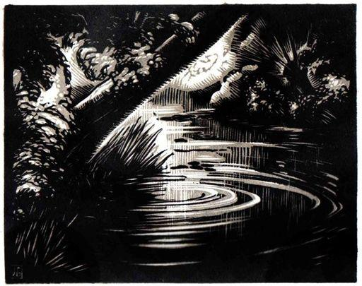

Cela a été. Elle a cru mille fois oublier le souvenir instable. À travers douze ans il reprend vie. Voici la haute stature virile. Elle sent l’odeur qui d’abord l’a surprise.
Elle marche plus vite à travers les ornières du chemin. Ses pieds ont tout à l’heure glissé dans une des flaques que l’averse récente fait luire sur le sol comme de la lumière tombée. La femme qui ramène un troupeau l’a saluée en vain. Sa vieille voix connue n’a pas fait s’enfuir le fantôme… Marie Pascal gravit le coteau. Il barre l’horizon de ses rangées de sapins qui lui prêtent un air vosgien, comme un coin de terre lointaine transportée dans le pays. Au centre du triangle clair qu’y découpe le ravin, elle aperçoit les petites croix du cimetière militaire relégué là, pour que les tombes dans la plaine ne gênent point les belles cultures productives.
Serait-il là, l’absent éternel, celui sur lequel dès sa sortie de l’hôpital, le silence s’est refermé ? Abandon ou mort ? Marie n’a jamais su. Elle n’a jamais eu que ses lettres revenues vers elle avec la mention : « Disparu ». Le hasard aurait-il permis qu’il y ait un lien mystérieux entre elle qui est là sur le chemin et ce qui pourrit, sous le sol, remêlé à la terre ?
Annette ! Annette ! La petite fille claire combat l’obsession dont tant de fois elle a cru être à jamais quitte et qui encore la submerge. Annette, en apprenant sa leçon, penche sa tête un peu à gauche et la range de ses cheveux envahit la joue droite et se détache de l’autre joue, comme une aile pendante et brisée. Les yeux candides la délivrent de cette sorte de honte qui repose toujours au fond d’elle, comme si elle avait jadis transgressé ses plus profondes exigences en cédant à la force obscure qui l’avait rendue, jusque dans la fougue, l’esclave et presque la victime d’une volonté étrangère. Et celle-là, comme elle l’identifie mal à présent avec cette femme qu’elle est devenue et qui regarde ce soir si pur, et ce ciel, rosé comme une joue d’enfant, qui luit au couchant entre les arbres fleuris, nacrés pour quelques instants de reflets roses !
*
Une lettre attendait Marie. Elle la trouva sur la table, en rentrant. Sur l’enveloppe mauve, la chère écriture naïve avait calligraphié son nom. Elle rougit, n’osa pas la lire devant les vieux, la posa sur un coin du buffet et durant le repas savoura la joie de son attente. Dans sa chambre, elle essaya de la prolonger en faisant durer ses préparatifs du soir. Enfin elle n’y tint plus, et avec précaution ouvrit l’enveloppe du bout de son coupe-papier d’argent qui était un cadeau de ses élèves.
D’abord son regard impatient buta sans rien comprendre aux lignes régulières.
« Chère mademoiselle, me voici sans vous, c’est-à-dire bien seule. J’essaie de faire tout le travail que vous nous avez donné. Je lis les livres que j’ai pu me faire acheter sur la liste que vous nous avez remise. J’espère apprendre et devenir une meilleure élève pour vous. Je voudrais savoir si vous vous reposez bien de vos fatigues. Il ne pleut pas et j’en suis bien contente puisque vous pouvez vous promener. Je devrais souhaiter que les vacances soient longues pour que vous vous reposiez bien, mais je ne souhaite que de les voir finir pour vous revoir. Votre petite élève qui vous aime.
« ANNETTE. »
Elle ne retint que ce « vous aime » puis, « me voici sans vous, c’est-à-dire bien seule ». Tout le reste n’était là vraisemblablement que pour ces deux aveux. Le premier, échappé dès la première ligne parce que c’était ce sentiment de solitude que sentait surtout l’enfant. Puis elle s’était reprise pour écrire une lettre usuelle, raisonnable. À la fin, de nouveau les entraves des convenances avaient faibli. Le « vous aime » avait jailli de l’écriture moins appliquée, tandis que la signature était écrite avec une sorte de pesanteur, comme pour attester la véracité du témoignage.
*
Elle s’était dit : « Je ne lui répondrai pas » et pourtant, dès le lendemain, fléchissait sa volonté. Elle l’avait usée durant sa promenade où elle s’était répété les mots de la lettre enfantine, en regardant au seuil des fermes, la fête magique des espaliers. Ils accrochaient aux vieux murs leurs clartés floconneuses. La lumière semblait sur les pommiers s’être solidifiée en pétales, et, dans les enclos, les cerisiers faisaient de grands gestes blancs qui écumaient sur le ciel bleu.
Douceur pascale comme une enfance répandue sur le monde ! Tout reprenait une pureté et Annette était ces blancheurs soulevées au-dessus des terres sombres, nacrées de soleil et comme moirées de leur imperceptible balancement dans l’air.
Elle se représentait la petite guettant le facteur. Deux fois par jour lui infligerait-elle la déception du silence ? Ferait-elle encore s’exaspérer l’exaltation d’un sentiment en le laissant sans certitude ? Livrerait-elle ce cœur aux périlleuses puissances de l’attente, l’attente, peut-être la meilleure auxiliaire de la passion ? Même pour borner l’amour d’Annette, il fallait répondre. Elle se l’affirmait pour donner à son propre désir une raison qui fût, en quelque manière, de renoncement.
Mais elle oubliait que cette sollicitude, ces calculs pour préserver Annette de trop s’imprégner d’elle, et jusqu’aux propres débats de sa conscience ne faisaient que fortifier son propre amour.
En rentrant elle écrivit. D’abord à la petite infirme, Madeleine Legendre, qui lui avait envoyé une carte de son village, puis à la garçonnière Coutenier qui lui demandait des indications pour un examen. Elle voulait que sa lettre à Annette fût insérée dans d’autres actes semblables, n’eût pas l’air d’un don unique, et, lorsqu’elle fut devant ce carré de papier qui devait apporter son âme à l’enfant, elle eut peur. Quels mots trouver qui sachent exprimer sa tendresse sans en rien dire et de cette façon secrète dont s’était servie instinctivement Annette, avec son écriture encore maladroite et ses phrases de petite fille ?
Longtemps elle demeura, son pâle visage penché vers la table. Elle n’écrivait pas. Le grand calme des champs enveloppait le village déjà endormi. Le vieux mur du hangar brillait sous la clarté lunaire et semblait serrer contre lui la charge blanche des poiriers. Une vaste odeur mouillée entrait par la fenêtre et sous ce souffle elle s’étonna de sentir son cœur se gonfler comme d’un trouble de jeune fille. Au loin, un rossignol se mit à essayer une roulade hésitante et cette voix dans la nuit lui fit peur comme si elle émanait d’elle-même, était sa propre voix.
Une idée suppliciante la traversa qui ne l’avait encore jamais effleurée : son amour voué à Annette n’était-il pas un dérivatif d’un besoin plus secret ?
Elle se demandait, anxieusement, si elle était encore une femme accessible à tout ce qui tourmente et exalte. Tant d’années de vie engourdie et grise ne la rassuraient pas. Elle se sentait incertaine, mal défendue et avec répugnance s’interrogeait : Qui donc est moi ?
Elle était descendue au jardin et tournait autour des plates-bandes rustiques où le vieux grand-père entretenait fleurs et légumes dans une naïve fraternité. Rêvait-elle encore du bonheur ? Quelque chose en elle, même à son insu, désirait-il encore tout ce qui l’avait laissée autrefois meurtrie et humiliée ? Elle ne savait plus ce qu’elle apporterait à l’enfant, si elle ne serait pas, elle-même, aussi peu sûre que la mère puérile en qui Annette ne trouvait pas l’unique amour qu’elle cherchait. De quelle sécurité était-elle pour ce cœur tyrannique ?
Elle ne s’interrogeait pas sur la sécurité que pour elle serait l’enfant. Elle avait la merveilleuse humilité de ceux qui aiment. Elle retraversa le printemps, remonta dans sa chambre, ferma la fenêtre, se dévêtit.
Le lendemain elle partirait pour Paris.
Elle y venait parfois passer une journée durant les vacances, et quelquefois même, dans les premiers temps de son séjour à Amiens, elle s’y évadait de la tristesse morne des dimanches provinciaux. De ses années d’études elle avait gardé une sorte de familiarité avec la ville. Mais elle partait le matin et rentrait le soir pour éviter l’hôtel étranger : tout ce qui effrayait sa nature qui avait besoin de la protection des choses familières, qui souffrait du vide des chambres inconnues et pour qui la couleur inusitée d’un papier peint était perçue comme un motif de détresse.
De Paris elle n’aimait que ce qu’avait touché ses pas de jeune fille : le quartier des Écoles, celui des Musées, les théâtres dont elle avait goûté les spectacles, les salles où elle avait connu cette ivresse dangereuse et sans rassasiement possible de la musique.
Cette fois, elle y venait chercher ses réactions de jadis comme pour une épreuve qui la renseignerait sur elle-même. Elle avait besoin d’être tentée.
Elle s’y livra de nouveau, si fragile et comme effacée, dans le fond de cet amphithéâtre où elle avait comme voisins, à droite et à gauche, deux professionnels qui suivaient sévèrement les notes sur leur partition. Elle, ignorante, ne suivait que cet émoi né avec les premières sonorités et qui s’infiltrait en elle, et, selon la couleur des sons, la peuplait de différents rêves, et tout à coup la jetait dans cette nostalgie qu’elle reconnaissait intacte à travers les années. Il lui semblait retrouver soudain sa jeunesse d’autrefois lorsque, échappée à l’école de Sèvres, elle venait s’offrir à la même ivresse, titubait presque en sortant, puis, comme soulevée par un appel, longeait les quais de son pas souple et se perdait dans le Paris brumeux.
Et les sons agissaient encore avec leur maléfice. Ils la soulevaient d’espoir. Pourquoi n’y aurait-il pas pour elle d’autres possibilités ? Toutes les rêveries de sa jeunesse la reprenaient. Elle se débattait, douce et déjà gagnée, contre les anciens mensonges, et les violons la projetaient – comme si leurs archets mobiles trouaient inlassablement le réel – vers les régions surnaturelles du bonheur. Elle, si sédentaire, appelait d’autres horizons. Le monde se creusait. Une ivresse de départ était en elle. Fuite et attente. Comme celles que font alterner en nous un nouvel amour.
*
Le scrupule, qui lui avait fait rechercher cette épreuve, devait la supplicier durant ses derniers jours de vacances. Rentrée dans son village, devant la lettre commencée, elle ne s’était plus senti le droit de l’achever.
« Ma chère enfant ». L’habituelle formule avait été seule écrite. Les lettres pour Madeleine Legendre et Alice
Coutenier étaient encore sur la table. Elle les déchira, se réfugia dans le silence. Annette attendrait cinq jours encore avant de la revoir. Et, dès la première journée, elle escompta de nouveau les heures probables de la venue du facteur, souffrit de la déception de l’enfant.
Les heures mesquinement vécues parmi les conversations paysannes, étrangère au milieu des siens – et ne les chérissant que parce qu’ils étaient mêlés à tous ses souvenirs et que d’eux elle avait reçu l’aide qui lui avait permis de devenir elle-même – lui pesaient sur le cœur comme un malaise. Elle mâchait un goût d’ennui.
Le vieux, taciturne, fumait sans répit dans une douce torpeur. Sa tendresse fruste, où elle avait trouvé un recours, lui paraissait à présent dénudée. La grand’mère affairée et bavarde la heurtait sans cesse. Elle en vint à désirer sa solitude d’Amiens où rien ne la blessait et où des voix et des présences ne s’interposaient pas entre elle et elle-même. Là elle pouvait le mieux sentir son cœur.
Elle retrouva l’enfant dès qu’elle eut ouvert la porte de son petit logement abandonné. C’était l’éloignement qui la lui avait fait perdre, ou peut-être les présences étrangères. Elle se dit : « L’inactivité de là-bas ne me valait rien », et sourit des tentations soudain oubliées, comme si son esprit avait été en proie à une sorte de maladie et son âme détachée de ses vrais liens.
Elle refit de l’ordre, ôta la poussière, redescendit chercher des provisions, rouvrit ses livres, reprit ses copies, baisa la chère écriture appliquée, s’en voulut d’avoir usé sa vie depuis quinze jours dans une sorte de drame fictif.
Elle n’avait plus qu’à attendre. Chaque lendemain lui rendrait sa joie. Tout cela était simple, si simple… Qu’avait-elle donc compliqué dans l’éloignement ? Demain Annette serait là – l’après-midi seulement car sa section n’avait pas de cours le matin, – au deuxième banc à droite, à la deuxième place. Le jour des fenêtres lui venait à gauche et, comme en écrivant elle inclinait toujours un peu la tête de ce côté, elle avait l’air d’offrir son visage à la lumière.
Dix-sept jours avaient duré ces vacances interminables. En ces dix-sept jours elle aurait sans doute changé. Elle reviendrait un peu modifiée, comme elle l’avait été à la Noël, et pourtant toujours elle-même. Marie retrouverait tout ce qu’elle avait si délicieusement retrouvé et trois mois et demi d’intimité leur seraient rendus. Elle ne pensait pas que ces trois mois auraient une fin. Rien n’altérait la joie de son attente.
Demain ! Déjà demain ! Les heures dansaient de légèreté. Marie oubliait de regarder le square où les marronniers dardaient sous la pluie fine, au milieu de leurs feuilles molles, les durs cierges de leurs prochaines fleurs. Elle n’avait pas besoin d’espace, se cantonnait dans les pièces closes, où tant d’images de l’enfant étaient demeurées, et refaisait ce jeu, qui durant l’hiver avait peuplé tant de ses dimanches, de susciter la petite présence et de s’entretenir avec elle.
En bas, le tailleur avait déjà clos les volets de sa boutique et cela allait bientôt être la nuit. Marie accueillait, avec plus de douceur encore, l’ombre, cette fin de jour, la promesse du lendemain…
… Elles se souriraient de loin, sans même esquisser un sourire, par le regard seul échangé. « Je suis bien seule » avait écrit Annette. Celle solitude cesserait. De nouveau, Marie lui communiquerait son âme. Ô voix qui permet le don le plus absolu ! Regards qui touchent mieux que des bras qui bercent. Félicité abstraite, que les exaucés négligent, mais où les êtres contraints à respecter des interdictions puisent un si violent bonheur ! Marie reposséderait tout cela.
La nuit passa, où elle flotta entre le sommeil et le rêve. La pluie s’égouttait des toits. Sur le matin les gouttes cessèrent. Un coq chanta dans le jardin de l’hôtel voisin. Elle vit le beau temps en ouvrant sa fenêtre sur le square où les verdures lavées de pluie rayonnaient au soleil levant. Elle aussi se sentait comme rafraîchie et baignée d’aurore. Il n’y avait plus que quelques heures d’attente. Pas seulement d’attente puisqu’elle allait partir au Lycée, remettre les pas dans les pas, retrouver les murs et les chères choses spectatrices. Son impatience devançait la réalité. Elle fut en pensée sur le chemin avant même d’avoir achevé de s’habiller, elle reprit contact avec sa classe avant même d’être sortie. Tout ce qu’elle fit ce matin-là fut comme avancé d’une heure, accompli par anticipation.
Même lorsqu’elle eut devant elle ses autres élèves de Cinquième : celles de la section A, elle ne prit que faiblement conscience de celles qui étaient là : Solange, rose comme un pêcher en fleurs, brillait comme la plus belle éclosion du verger, les deux petites filles modèles dans leurs tabliers clairs ressemblaient à deux petits pommiers en boule, et toutes les rangées de jeunes visages avaient la fraîcheur duveteuse des espaliers. Printemps, printemps humain ! Elle en était entourée comme elle l’avait été de celui éclos sur les terres. Et dans tous les deux elle ne voyait que l’image d’Annette. Elle s’imposait là comme elle s’était sans cesse imposée ailleurs. Elle avait cette odeur propre de linge frais, cette voix encore neuve d’enfance.
La petite Luce Ardouin, avec son arsenal de médailles, ses cheveux bien tirés en tresses lisses, occupait dans la section A la même place qu’Annette en B. Et à cette espiègle figure en pomme d’api creusée de fossettes, dont aucune éducation dévote ni aucune tyrannie maternelle n’avaient pu oblitérer l’expression vraie, Marie sans cesse superposait le visage pensif d’Annette, entre ses lourdes virgules de cheveux noirs.
Et ses paroles s’adressaient à l’absente, au-dessus des petites présences remuantes, agitées par l’ivresse encore récente de la liberté.
Il faudrait huit jours, peut-être quinze, pour enrayer cette turbulence. Mais Marie n’était plus occupée de cela, délivrée de ses habituels soucis. Discipline et méthode ne l’inquiétaient plus. Et elle dictait avec allégresse, s’amusait des fautes d’orthographe, rappelait à l’ordre avec un tel sourire que les petites délinquantes souriaient aussi.
— Quelle est chic ce matin ! s’exclama en sortant la petite Luce Ardouin.
— Oui. Mais qu’a-t-elle donc ? s’étonna rêveusement la belle Solange, en regardant Marie s’éloigner dans le couloir.
Un intervalle d’une heure séparait les deux cours de Marie. Elle avait l’habitude de passer cette heure dans la salle des professeurs devant un coin de table où elle préparait ses prochaines leçons. Cette fois elle dédaigna tout travail, s’approcha de la fenêtre. Une grande fille était là, assise et mordant à pleines dents un petit pain. Sa jeunesse étonna Marie dans cette pièce où seules ses collègues étaient admises et, comme l’inconnue la saluait, elle s’enhardit jusqu’à lui demander son nom.
— Je suis la suppléante de Mlle Lambert.
Marie ne savait pas que Mlle Lambert fût souffrante.
— Mais non. Elle est partie en Angleterre pour préparer une thèse. Je la remplace jusqu’à la fin de l’année.
Le petit pain était mangé. La suppléante remit son imperméable, enfonça sa tête aux cheveux courts dans son chapeau ciré, salua Marie. Marie écouta son pas bruyant sonner clair dans le couloir. Un pas inusité, différent de tous ceux qu’elle entendait dans la maison monacale. Elle sourit au pas bruyant, se dit : « Comme elle est jeune ! » et sourit encore à l’idée de la jeunesse.
*
À midi, son impatience l’empêchait de manger. Son cœur bondissant l’entraînait encore à devancer tous les actes qu’elle avait à faire, aussi sortit-elle plus tôt que d’habitude, si tôt qu’elle n’osa pas rentrer dans le Lycée fermé.
Elle préféra user son impatience sur le boulevard où les tilleuls avaient à présent de jeunes feuilles granuleuses. Le soleil tachait l’allée de ronds dansants et elle marchait dans des éclaboussures de lumière.
Peut-être, de l’autre côté du pâté de maisons, dans la rue des Trois-Cailloux, près du square, Annette descendait-elle du tramway. Déjà des groupes d’enfants égaillés remontaient la rue.
Marie redescendit vers le Lycée, dépassa la porte, se dirigea vers le square, guetta la petite silhouette au manteau à carreaux blancs et noirs.
De petites arrivaient dont aucune n’était Annette. Elle revint sur ses pas. Au fond de la rue on voyait luire les tilleuls du boulevard, et là-bas, le manteau noir et blanc vêtait la petite forme dansante. La petite se hâtait. Mais était-ce vraiment elle ? À son côté marchait une femme, grande, élégante et assez forte. De loin Marie ne voyait que cette robustesse épanouie. Un instant il lui parut – avant qu’aucune supposition ne se fût nettement formulée en elle – que son cœur se contractait comme à l’approche d’une douleur. Elle se sentit souffrir avant de comprendre pourquoi elle souffrait et elle faillit céder à cette sorte de panique qui déjà la faisait demeurer immobile, prête à rebrousser chemin.
C’était bien Annette qu’accompagnait l’inconnue. Devant la porte du Lycée la petite se serra contre elle. La femme s’inclina un peu vers l’enfant ; puis elle s’éloigna, en sens inverse de Marie, vers la trouée du boulevard faite de soleil et de branches.
Et Marie regardait maintenant avec une avidité douloureuse cette forme vêtue de clair, cette belle démarche un peu molle, cette femme éclatante de vie qui était la vraie mère d’Annette.
Elle se sentit si violemment dépossédée que quelques instants elle demeura immobile. Jamais elle n’avait pris aussi brusquement conscience de son effacement, de sa jeunesse finissante, de son manque de beauté. De l’autre côté de la rue, une boutique lui renvoya, lointaine, sa silhouette menue, pauvrement habillée et la pâleur de son visage. L’enfant était rentrée sans la voir. Elle fut tentée de remonter jusqu’au boulevard, de suivre la femme qui s’en allait, de sa démarche heureuse, sous les branches.
La longue bâtisse rouge et blanche du Lycée, les élèves qui entraient et cette file sombre d’internes venues du pensionnat voisin dans leur uniforme bleu marine, la rappelèrent à l’ordre. Elle appartenait à une règle. Elle n’avait plus le loisir d’interroger son cœur.
Mais une sorte de douloureux malaise cheminait avec elle jusqu’à la salle des professeurs, puis le long des couloirs. Elle ouvrit la porte de sa classe avec une sorte de tremblement. Les petites, domptées par la répétitrice qui faisait l’appel, l’attendaient, silencieuses, et selon l’usage se levèrent d’un bloc en signe de salut. Son regard buta sur elles, courut à Annette. Le petit visage pâli, les yeux cernés faillirent lui arracher un cri. Mais toute la figure que creusait l’attente s’illumina, et Marie fut incapable de percevoir autre chose que l’immensité soudaine de son bonheur.
*
« Ne trouvez-vous pas que la petite Rieu a beaucoup changé ? » lui demanda en la conduisant jusqu’à la porte de sa classe, Mlle Hatsfeld. Marie eut un soubresaut. Depuis trois jours elle vivait dévorée de regret devant ce petit visage tiré, aux yeux battus. Vingt fois elle avait failli se précipiter vers l’enfant pour lui dire : « Annette, qu’est-il arrivé ? Tout ce désastre, en suis-je cause ? » Mais elle n’avait pas osé, ni en classe, ni le long des couloirs où elle s’était surprise à ralentir le pas pour permettre à Annette de la rejoindre, ni dehors à l’abri des branches nouvelles contre le square fleuri.
— Elle traverse sans doute une crise de croissance, proposa-t-elle. Sa voix lui parut odieuse, hypocrite. Mlle Hatsfeld, qui connaissait tout de la ville, ajouta :
— Vous savez, sa mère la tourmente peut-être. Elle est très sujette à caution. On dit que du vivant du père elle était très bien avec le directeur de la compagnie où il était ingénieur. Maintenant on parle d’une liaison nouvelle. À cet âge, les enfants comprennent. Comprennent et souffrent !
Mlle Hatsfeld s’était déjà éloignée dans le couloir, sa haute et maigre stature un peu penchée en avant. Marie, interdite, entra en classe. Les petites en tabliers clairs étaient debout, en ligne contre les tables, pressées l’une contre l’autre comme de petits oiseaux. Et les têtes vives se penchaient, tournaient, picoraient l’espace. Le silence se faisait lentement coupé des dernières rumeurs.
Marie s’assit, regarda par la fenêtre le ciel bleu. En elle la crainte qui depuis trois jours la suppliciait fondait lentement. Elle était innocente de cette figure pâlie, de ces yeux cernés, de ces poignets devenus trop maigres pour la main un peu grande, encore rouge d’enfance. Puis, tout d’un coup, elle fut déchirée, en révolte contre cette femme qui faisait souffrir l’enfant, son enfant !
Les tabliers clairs étaient sagement alignés contre les tables. Encore une ou deux têtes qui remuent. Puis l’immobilité de l’attente.
Marie ne se décide pas à commencer. Le livre reste ouvert, à la page voulue, posé là par d’amicales prévenances, et, elle, voit confusément un homme vieilli, important, près de la femme épanouie. Elle voit l’enfant à l’écart, la petite qu’on envoie coucher de bonne heure et qui ne dort pas, qui reste les yeux grands ouverts, haletante devant ce mystère qu’est la vie de ceux qui sont assez grands pour vivre, obscurément jalouse et, plus obscurément encore, indignée.
Elle voit. – Oh ! pourquoi les petites filles alignées se sont-elles mises à balancer de nouveau leur tête et à chuchoter un peu, étonnées de son silence ? – Et tout à coup elle relève le front. Elle boit le rectangle bleu, l’été, le bonheur : tout ce qui en elle se soulève, bondit de joie, clame, sans paroles prononcées, cette affirmation qui soudain l’illumine.
— Elle sera à charge à sa mère. Elle n’aura plus de mère !
Et ce grand espoir qui supprime toute entrave de réalité :
— Je pourrai l’avoir à moi !
*
À ces heures où elle s’arrête de travailler que de projets l’habitent ! Elle restaure sa maison du village, déplace les cloisons, ouvre une grande fenêtre sur le jardin, tend d’étoffe claire une nouvelle pièce. Il faut qu’Annette puisse se plaire dans sa maison d’enfance. Il faut qu’Annette vive où Marie a vécu, qu’elles puissent plus tard dire : « notre maison ». Il faut qu’Annette louche à la terre par les mêmes racines qu’elle, qu’il y ait entre elles deux cette attache que sont les parents communs, les choses communes.
Sans doute aimera-t-elle le vieux grand-père malgré sa rusticité. Mais l’aïeule sèche et dure trouvera-t-elle grâce devant elle ? Marie ajoute à ses anciens motifs de rancune celui, inexistant mais si réel pour son cœur, d’une mésentente possible avec l’enfant.
Et là, dans son appartement, elle cherche par quelles combinaisons agrandir l’étroit espace des trois pièces avarement mesurées… Ou peut-être y aura-t-il plus de douceur à vivre resserrées ainsi dans la protection plus proche des murs, sous la même tendre lumière, les souffles voisins, un sommeil veillant sur l’autre sommeil.
Et quand Annette sera plus grande, qu’elle aura besoin de rêverie et de solitude, Marie cherchera un autre logement…
Mais que puisse durer longtemps cette halte de la demi-enfance ! Marie chasse l’image de l’avenir. Elle écarte les menaces. Elle rêve que soit éternelle – en souffrant déjà de la sentir transitoire – cette période bienheureuse où la mère suffit à l’enfant.
Ce qui est bien ? Ce qui est mal ?…
Marie souriait. La grande fille qu’elle avait vue pour la première fois il y avait quinze jours dans la salle des professeurs, mordant son petit pain avec le bel appétit de sa jeunesse, venait lui faire une visite de collègue.
— Ici, dans cette petite ville, que le devoir doit être strict ! Mais quand on a couru le monde !…
De ses larges yeux, la nomade défiait la règle étroite et Marie, par un secret élan, se sentait attirée vers celle-là qui osait.
Les mains fortes et un peu viriles faisaient un geste qui dessinait des horizons, ouvrait des pistes, et les noms des lieux lointains sortaient de la bouche violemment peinte.
— Ici vous suffoquez ! Je l’ai senti en arrivant. Il y en a de trop habituées à leur geôle pour rêver l’évasion, mais vous, vous êtes encore trop jeune !
Marie secouait la tête. Elle n’avait plus de jeunesse. Pas au moins au sens où l’entendait l’étrangère. Elle se sentait, à l’inverse d’elle, le besoin de halte, et ce besoin plus secret d’une continuité d’elle-même dans un enfant.
— Depuis neuf ans que vous êtes ici n’avez-vous jamais aspiré à d’autres horizons ? C’est fantastique ! Enfin, vous ne semblez pas morte. Comment vous contentez-vous de ce square prisonnier d’une ville, de ces arbres moisis, des plates-bandes si sagement entretenues, et de ce ridicule tronc émondé d’arbre mort où l’on fait pousser dans des pots ces plantes d’ornements stupides ?
C’était vrai. Au-dessous du balcon de Marie, d’une écorce d’arbre évidée, le jardinier municipal avait fait jaillir les plus inattendues des feuilles et des lianes. Mais Marie ne les voyait plus. Elle n’était plus choquée par rien de ce qui surprenait la nomade, comme si l’univers réduit dans lequel elle se mouvait à peine avait fondu, usé par sa perpétuelle présence.
Elles parlèrent encore quelques instants de la ville, des boulevards dont une partie ressemblait aux belles avenues tranquilles de Versailles, puis de la campagne aqueuse et verte où les hortillonnages verdissaient de légumes gras entre les méandres de l’eau, et elles en vinrent à la cathédrale, robuste et triste, isolée sur son parvis, et dont l’intérieur offrait cette impression funèbre de monument trop grand dont l’ombre ronge même la hauteur.
Pour la première fois elles furent d’accord. Depuis l’adolescence, Marie avait eu l’effroi de cette énorme demeure de Dieu. Ses piétés enfantines s’y étaient muées en frayeurs mortelles derrière les gros piliers, dans cette pénombre de crypte, et, depuis son retour parmi les lieux de sa jeunesse, elle avait évité celui-là, ce sépulcre d’ombre. Jamais elle n’eût osé avouer à d’autres cette aversion secrète. Mais l’étrangère au regard décidé semblait vouloir sonder les replis mêmes de son cœur. Elle n’apportait si nettement son témoignage que pour surprendre des aveux. Elle brusquait sa propre réserve peut-être pour mieux violenter celle des autres, et Marie, docile et dénouée, n’offrait pas de résistance. Car sa pudeur n’était que de la passivité : elle appartenait aux violents.
Maintenant Dominique Allary causait de leurs collègues et les visages que, durant neuf ans, Marie avait vus sans les deviner s’éclairaient d’une brusque lumière. La nomade avait pour les âmes ce même don d’investigation rapide qu’elle apportait à sa découverte du monde. Habitude de voyageuse, cette hâte de tout tirer des êtres avant de les fuir. C’était Marie qui s’étonnait et disait : « Vous croyez ? » avec une surprise naïve.
Elle n’était jamais allée si avant dans ces cœurs inconnus, et, lui semblait-il, morts et fermés. Elle n’avait jamais remarqué quelle anxiété presque jalouse précipitait au-devant l’un de l’autre une de ses vieilles collègues et son vieil époux. Elle ne savait pas que le professeur de musique, dévorée d’ambition maternelle, transformait l’enfance de ses trois filles en enfer instrumental. Elle ne s’était jamais douté de l’attachement profond qui liait deux de ses collègues toujours ensemble, mais d’apparence si distante qu’on les eût dites rassemblées par quelque contrainte inéluctable, et elle avait peine à imaginer que ce resplendissement, parfois apparu sur son ingrat et jaune visage, indiquait chez Mlle Weil-Lévy l’ivresse de son don à Dieu.
Elle savait pourtant qu’elle habitait, au fond de la ville, un couvent de Dominicaines qui prenait, pour subsister, quelques dames pensionnaires. Elle avait traversé le cloître d’entrée, le grand parloir, monté l’escalier de bois clair qui conduisait à ces deux petites pièces où, sous les toits, entre une employée des postes et une infirmière à domicile, logeait sa collègue. Mais elle n’eût jamais deviné que ce domicile avait été choisi pour d’autres raisons qu’un calcul d’économie et un besoin de calme et de sécurité.
— Mlle Weil-Lévy ! répétait-elle dans son étonnement.
— Et que voulez-vous qu’un nom juif fasse à l’affaire ! Elle est baptisée. Baptisée et soumise à la règle. Presque religieuse parmi vous. Heureusement qu’elle enseigne les mathématiques ! Sans quoi que d’histoires avec les autorités !
— D’histoires ? Pourquoi ?
— Et la neutralité scolaire ?
Marie n’y avait jamais pensé. Pour elle, son âme même pratiquait cette neutralité, s’y mouvait à l’aise. Elle n’avait jamais eu le besoin de donner un principe dernier à ces petites qu’elle guidait vers la vie. Ses admirations lui suffisaient. Corneille était son pain.
Elle dit, comme si elle le constatait pour la première fois :
— Ici tout le monde est catholique.
— Même dans la foi l’excessif scandalise.
— Parmi nous qui serait excessive ?
— Toutes peut-être.
— Allons, vous parliez de nos vies ralenties !
— Mais il y a des passions de momifiées. Plus le cercle est restreint et la vie resserrée, plus grandit l’obsession.
Le mot surprit Marie. Elle leva sur sa compagne un regard interrogateur.
…Tout ce qui prend une importance dévorante, à défaut de mieux : la vanité, la jalousie, le pédantisme et même l’égoïsme où conduisent les existences sans issue vers d’autres.
— Nous avons les enfants !
Elle avait crié sa protestation et aussitôt le regretta. Il lui sembla que l’étrangère la transperçait de son regard lucide. Un moment, sans paroles échangées, elle se sentit lue comme un livre ouvert. Elle était si désarmée que Dominique Allary eut compassion, feignit le badinage.
— Oui, parlez-en ! Pour ce que cela importe ! Pour le peu de temps qu’on les a, ces gosses, et pour le peu de fruit qu’aurait notre attachement !
Mais Marie savait bien qu’elle ne parlait ainsi que pour dissimuler sa découverte, et eut, malgré elle, un rapide coup d’œil pour voir si cette photographie neuve, qui la représentait au milieu d’un groupe scolaire, à côté d’Annette, ne pouvait pas se distinguer nettement de la place où était installée la voyageuse qui semblait décidée à ne pas encore partir.
*
Car elle avait consenti à poser au milieu de ses élèves lors de la tournée annuelle du photographe scolaire, obéissant au regard de prière d’Annette, attentive depuis quinze jours à donner tout ce qu’elle pouvait apporter de consolation à l’enfant pâlie et ulcérée.
Ainsi toutes ses réserves s’étaient abolies peu à peu. Il fallait avant tout empêcher Annette de souffrir, redonner de nouveau la flamme aux yeux battus, du renflé à
la joue un peu creuse et restaurer l’enfance qui s’enfuyait de ce corps étiré, de ces gestes mesurés et doux : des gestes qui ont appris à faire silence, à ne pas empêcher de s’écouter souffrir.
Elle se disait à présent : « Annette m’aime-t-elle assez pour oublier le reste ? »
Elle s’inquiétait chaque matin de la découverte que la petite avait pu faire dans le domaine de la douleur. Les jours où le petit visage paraissait plus gai, l’espoir bondissait en elle que l’amertume était digérée, l’angoisse évanouie, usée peu à peu par la certitude, qu’Annette se déprenait de la mère négligente, occupée d’autre chose, qu’elle allait tout entière lui revenir.
Mais un regard un peu vague, vidé d’attention, dirigé vers la fenêtre, la replongeait dans son trouble douloureux.
À quoi pensait-elle quand elle regardait ainsi sans voir ?
Mystère de cette tête soulevée un peu vers la lumière ou inclinée sur le livre ouvert ! La rivale invisible la lui prenait même aux heures de cours, à ces seules heures où autrefois l’enfant lui appartenait sans partage.
« Vous êtes un peu pâle, Annette. Ne vous sentez-vous pas malade ? Mangez-vous bien ? » Elle l’interrogeait à présent lorsqu’elle la croisait dans le couloir. Elle la déléguait pour faire toutes ses commissions. À quatre heures, elle passait toujours devant le réverbère où elle attendait.
L’enfant intimidée répondait par phrases brèves. Ses mots maladroits ne parlaient jamais que de ses préoccupations d’élève. Non, elle n’avait pas encore commencé d’écrire sa prochaine composition française : elle avait une composition de « math » à préparer.
Elle disait « math » comme les autres petites écolières. Marie s’étonnait de ne pas l’entendre parler avec des mots de grande personne, des découvertes, des intuitions : tout ce qu’elle trouvait écrit dans ses devoirs.
Elle ne devinait pas à quel point Annette était intimidée, étranglée de joie et dans le malaise de son ignorance devant le professeur nimbé pour elle du prestige du savoir. Et elles parlaient toutes deux avec une double gêne : Marie interdite de ne pas trouver dans la petite fille gauche l’être d’exception qu’elle avait rêvé, Annette, annihilée par son émotion.
Devant le réverbère qui était le lieu de leur rencontre rapide, la grille du square, ce bout de trottoir avançant sur la chaussée, Marie repassait lorsque l’enfant était partie et elle refaisait en elle l’inventaire de leur bref colloque, pesait les pauvres mots maladroits qui lui avaient été donnés, les scrutait, tentait d’y deviner tout ce qui n’avait pas été dit. Puis, elle rentrait chez elle, suivait Annette jusqu’au faubourg lointain, entrait dans sa maison inconnue.
« Elle fait ses devoirs. Elle apprend ses leçons. Elle oublie. » L’heure des repas commençait son angoisse. N’était-ce pas l’heure où Annette retrouvait sa mère ? Et sa mère dînait-elle seule avec elle ? Qui sait ?
Elle s’irritait de ne pas savoir, d’être chassée, par toutes ses ignorances, des tourments qui pouvaient atteindre l’enfant.
Le soir, Annette remontait dans sa chambre. Était-ce à ce moment seulement quelle allait souffrir ? Devinait-elle dans la maison une présence étrangère, ou tout se passait-il au dehors, et la petite n’avait-elle tout appris que par une surprise, un dialogue entendu, une indiscrétion de domestique ? Et que savait-elle exactement ?
Avec plus d’anxiété encore, Marie se demandait ce que ce savoir pouvait éveiller en elle ? De quelle science de la vie était mêlée son ignorance ? Quelles pensées se levaient, et quelles images, sous le front puéril et la frange des cheveux noirs ? On lui abîmait l’innocence d’Annette ! On détruisait la pureté d’Annette ! Une amère rancœur la révoltait. Et elle se demandait aussi, consternée de sentir ce désastre : « Est-ce de ce mal-là que souffre aussi l’enfant ? »…

Ma prédilection peut donc se voir ? Marie resongeait au regard scrutateur de la visiteuse. Elle traversait, comme chaque jour, le vestibule dallé qui aboutissait à la cour balayée d’un courant d’air perpétuel. La récréation n’avait pas sonné, mais une impatience lui faisait toujours devancer son heure de classe et elle écoutait ces bruits familiers qui l’accueillaient dès son entrée. Voix psalmodiantes et monotones des petites classes où des enfants épelaient. Chants aériens qui descendaient de la haute salle de musique au troisième étage. Vibrations sonores avec lesquelles Mlle Hatsfeld articulait les textes allemands. Puis, plus confuses, d’autres voix, discernables seulement par leur ton d’interrogation soudain surélevé, ou le coup cinglant d’un blâme, et, au-dessous encore, ces murmures où pourtant se devinaient des hésitations d’élèves récitant leurs leçons ou cherchant une réponse lente à se formuler. Quelques heurts de chaises. Des claquements de règles frappant sur une table. Toutes ces rumeurs dont est fait le silence des heures de travail.
« Devine-t-on sur mon visage ma prédilection ? Sont-ce mes seules paroles qui m’ont trahie ? Comment me suis-je si sottement livrée ? » Puis à la réflexion, en elle renaissait le calme. « Mlle Allary est là pour si peu de temps ! Qu’importe que celle-là sache ! »
Elle la cherchait pourtant du regard avec une sorte d’appréhension en entrant dans la salle des professeurs. La pièce mal éclairée avait toujours sa mélancolie conventuelle, avec son revêtement d’étroites armoires de chêne sombre, ces fenêtres dans le renfoncement des murs épais, le jour venu avarement de la cour en contrebas.
À cause de l’heure tout était vide. Des brochures traînaient en désordre sur la table au milieu des journaux corporatifs. Les chaises déplacées indiquaient l’insouciance du décor et la nécessité d’obéir vite à l’appel d’une cloche qui jetait hors de son siège la femme assise là pour une courte halte, et l’entraînait le long des corridors jusqu’à une classe qui l’attendait.
Marie aimait la rigueur de cette salle, son air de détachement et d’austérité. Elle ouvrit son étroite armoire, y déposa son chapeau, son manteau d’été. Elle choisit sur l’étagère les livres dont elle allait se servir, puis se réfugia dans l’enfoncement d’une des fenêtres.
Il fallait lever les yeux pour découvrir le ciel ravagé de nuages lourds, en mal d’orage. « Que peut importer qu’une passante ait surpris mon secret ! » s’affirma-t-elle encore. Elle se fortifiait dans sa paix, entr’ouvrit doucement les battants à l’air lourd qui sentait la sève. Des traînées écœurantes venaient par moment d’un jardin voisin, par une échancrure des bâtiments où s’apercevaient des sureaux en fleurs.
Elle prit ses livres, relut les textes qu’elle allait faire connaître à Annette, revit la chère petite figure au nez un peu court, le charmant ovale entre les deux ailes pesantes des cheveux coupés. Quel poème préférerait-elle ? Elle les lirait en classe et ferait choisir. Moyen détourné de connaître mieux les goûts de l’enfant, de mieux pénétrer dans ce cœur qui lui était livré.
La récréation devait être proche. Elle entendait déjà le pas des surveillantes dans les couloirs et, comme elle se levait pour se préparer à regagner sa classe, elle aperçut avec étonnement un pli de robe dépassant l’arête de l’enfoncement de l’autre fenêtre.
Une femme était là immobile. Elle ne l’avait entendue ni faire un mouvement, ni manier un livre. Marie feignit de consulter les journaux corporatifs, tourna la longue table, fut en face de la seconde fenêtre.
Mlle Weil-Lévy paraissait dormir. Mais une intense vie d’émotion filtrait de son visage blafard. Ses lèvres s’ouvraient silencieusement sur des formes de paroles qui n’éclosaient en aucun son, et le corps rigide dans sa longue robe désuète semblait dépouillé de matière, n’être que le support de ce visage resplendissant.
La cloche allait interrompre ce rêve. Marie s’écarta, la plaignit de devoir quitter ce dialogue ineffable pour obéir à une règle. Déjà des cris montaient de la cour où s’ébattait un petit peuple délivré. Une exubérance anormale de gaîté naissait de l’attention imposée et du silence de l’heure d’étude.
« Comme la contrainte exalte ! » se disait Marie en montant l’escalier que descendaient des flots d’enfants.
Sa classe était libre.
Marie aimait ces quelques minutes d’attente où elle marchait lentement devant les pupitres vides, et où parfois elle osait monter la travée, s’arrêter devant la deuxième rangée, caresser de sa main le deuxième pupitre à droite. Au mur, le papier de l’éphéméride avait été soigneusement enlevé : « 25 Mai » y lut Marie en regardant par les grandes fenêtres ce même ciel d’orage où flottaient des nuées épaisses.
Tout un pan ténébreux du ciel se déplaçait insensiblement derrière un floconnement de nuages livides plissés à larges ondes, comme si un double courant de vents contraires à des hauteurs différentes ébranlait le ciel. Sous les rumeurs de la maison, Marie sentait le silence de ce glissement lourd. Elle se retourna en entendant derrière elle une grêle épaisse de battements sonores : c’était les pas impatients des élèves qui entraient.
Invasion de la classe qui avait toujours l’air d’une joyeuse lutte. Marie n’essayait jamais de la discipliner.
Elle aimait cette hâte de bousculade pour occuper une place, pourtant depuis longtemps définie et gardée, ces sortes de balancements dansants de tout un ballet ignorant sa danse, cette claire entrée de troupeau empressé au pacage, d’où toujours elle détachait – pour mieux en suivre les mouvements : joie, émotion d’attente, désir de paraître la plus silencieuse et bientôt la plus immobile, – Annette qui ne pouvait s’asseoir que lorsque les cinq camarades de la même travée étaient passées devant elle, et qui, entre chaque passage d’enfant, regardait Marie.
« Où était-elle aujourd’hui ? » La petite tête ronde aux deux ailes de cheveux envahissant la joue n’était pas entrée dans la danse. Elle la chercha du regard. Les petites glissaient dans la travée de droite. Quand toutes furent assises il y eut un vide. Un effroi étreignit Marie. Elle dit, sans même songer à dissimuler son anxiété :
— Où est Annette ?
Mais elle avait parlé si bas, alors qu’il lui semblait avoir crié, que seules celles du premier rang entendirent.
— Elle est absente, répondit Madeleine Legendre.
Marie poursuivait, sans se demander si tant de sollicitude ne paraîtrait pas suspecte :
— Sait-on ce qu’elle a ?
La petite infirme eut un geste d’ignorance. La garçonnière Coutenier en profita pour clamer :
— On sait pas ! Une petite voix acide au troisième rang demanda :
— Mademoiselle, est-ce que je puis prendre sa place ?
C’était Angèle Desrousseaux, une petite pâlotte et maigre, bavarde et un peu cancanière.
— Non, fit Marie.
Mais la petite n’eut pas de rancune.
— J’habite près d’elle. Je pourrai demander, à midi, des nouvelles.
Le cours commença par la récitation. Marie bouleversée regardait le grand ciel. Il roulait toujours ses nuages houleux sur son fond d’encre fluide. Il lui parut que depuis le matin elle sentait peser sur elle une menace, et elle essayait en vain de dominer cette terreur presque animale d’un danger certain : « À cet âge d’éclosion, les enfants ont tant de petites maladies. Combien d’autres ont de ces brusques absences après lesquelles elles rentrent étirées brusquement, parfois embellies. »
Heure lente. Heure suivante plus lente encore. Elle a déjà vu tous les périls possibles. Vingt fois elle a été tentée de donner aux enfants un exercice écrit pour mieux s’absorber dans sa terreur. Elle voit Annette écrasée. Elle se l’imagine se dirigeant là-bas vers les hortillonnages et peut-être déjà prise par l’eau stagnante. Il y a tant de suicides d’enfants !
« À cet âge on comprend et on souffre ! » lui a dit Mlle Hatsfeld. Elle se remémore tout ce qu’il y a de nouveau dans Annette : cet amaigrissement, cet air parfois absent, comme clos sur un mystère. Sa classe lui semble reculée, vue à travers des brouillards. Comme une automate elle lit, explique, interroge. Une double vie passe dans son esprit qui s’applique aux occupations nécessaires et pourtant suit dans la douleur son lucide trajet.
Elle est comme ce ciel au double courant qui, sur son fond de ténèbres toujours plus denses, chasse, en sens inverse, ses nuages.
*
Elle aurait pu se précipiter vers la maison d’Annette. Mais les convenances étaient pour sa timidité une suffisante entrave et dès qu’elle fut libre d’agir, rendue à la rue, aux tramways, aux autos de place, à tout ce qui pouvait lui servir à accourir, elle reprit le chemin de sa maison, en longeant les murs, de ce pas qui faisait dire à Dominique Allary : « Mlle Pascal marche comme un chien d’aveugle », hésitant au bout des trottoirs, traversant les rues avec circonspection. Elle acheta son pain, entra chez le boucher, remonta jusqu’au petit traiteur qui vendait des légumes cuits : ressources des jours pressés, rentra chez elle. Et tout ce qu’elle faisait, si en accord avec sa conduite habituelle, lui paraissait irréel comme si elle commençait à vivre sur un autre plan. Mais tout cela l’aidait à traverser le temps, et sa vie n’avait déjà plus que ce but : dévorer l’espace qui la séparait du moment où elle pourrait interroger la voisine d’Annette. Elle usa sa hâte en partant une demi-heure trop tôt, revint sur ses pas, se décida à rentrer dans le Lycée, attendit sous la voûte.
« Malade ! Annette est malade ! » Elle entendit confusément, lui répéter la petite intimidée et tout essoufflée d’avoir couru.
— On ne savait pas de quoi. Elle avait une fièvre intense. Sa mère était très soucieuse. Le docteur aussi.
Mais Marie se sentait presque rassurée, une angoisse plus affreuse se dénouait. Elle rentra d’un pas tranquille, commença ses cours avec allégement. Il n’y avait pas eu sur la chaussée un petit crâne brisé, ni ce cadavre surnageant entre les roseaux. La maladie lui paraissait un péril moindre. On guérit. Annette guérirait.
Angèle Desrousseaux, encouragée par son message, redemanda la place de l’absente. Marie n’osa plus refuser. Mais lorsque ce fut fait, elle eut un sursaut. Le vide était moins difficile à supporter que cette suppléance. Angèle Desrousseaux avait pris cet air d’importance qu’ont volontiers les enfants qui obtiennent une satisfaction convoitée. Elle fut odieuse à Marie. Elle évitait de porter son regard sur elle, mais ses yeux, habitués à regarder de ce côté, la voyaient toujours.
Puis il lui vint à l’esprit qu’elle avait condamné Annette à ne plus être là, puisque, au lieu de garder sa place, elle l’avait donnée à une autre. Elle songea : « Pas absente, mais plus qu’absente, disparue, rayée des vivants ! » Des superstitions l’étranglèrent. Elle eût voulu chasser la remplaçante, et les heures d’après-midi redevinrent aussi éternelles que les traînantes heures du matin. Une angoisse grandissante éclatait au fond d’elle à coups d’éclairs, comme l’orage soudain déchaîné dans ce grand ciel morne, dont la double respiration s’était fondue dans des ténèbres livides, et qui frappait à présent la terre de la flagellation de la pluie.
Elle n’osait pas sonner. Déjà trois fois elle était passée sur le trottoir en terre battue et gluant de pluie, puis, pour ne pas être remarquée, elle s’était éloignée et continuait ses allées et venues un peu plus bas, en face.
Le jour finissait, noyé d’eau. Là-haut, au deuxième étage de la maison étroite, construite comme toutes les maisons du faubourg avec sa mesquine architecture moderne, sa façade de briques, ses prétentieux accoudoirs de fer, une fenêtre s’était éclairée.
La maison semblait impénétrable. Les tramways de banlieue passaient lourdement. Piétinant dans la boue, Marie sentait l’air tiède et mouillé, encore pesant d’orage.
Sonner, demander des nouvelles… Et puis ? Après, que ferait-elle ? Et c’était, autant que sa crainte d’être intruse, cette terreur de la nuit à venir, sans plus rien apprendre de nouveau à chaque heure, qui la faisait hésiter à sonner. Elle se réservait, comme la suprême gorgée d’eau pour sa soif, cet instant où elle serait dans le couloir de la maison et où on lui parlerait d’Annette.
L’épicière était déjà sortie pour rentrer dans sa boutique les quelques bottes d’herbes et les bidons qui restaient exposés en montre sous la pluie. Les tramways déversaient d’arrêt en arrêt les masses d’hommes que la ville rend à la nuit. Marie avait déjà suivi les rues transversales pour essayer de voir, au-dessus des murs des enclos étirés derrière les maisons, les têtes des arbres du jardin d’Annette. Déjà elle était descendue jusqu’au bout du boulevard, à cet endroit où, au-dessus de l’eau des hortillonnages, il se voussait en pont pour atteindre la grande route et se perdre avec elle dans la campagne sombre. Puis elle était revenue vers la maison et la fatigue serrait ses tempes. Était-ce l’heure de sonner ?
Elle hésitait encore, à deux pas de la porte, lorsque le battant fut ouvert. Une servante effarée sortit, courut chez l’épicière d’en face, retraversa la voie boueuse. Marie la retint sur le seuil.
— Comment va la petite ?
La femme épaisse et ahurie répéta la question, parut enfin comprendre.
— Bien mal. Bien mal.
L’accent picard lui faisait une voix gutturale, et peut-être aussi son bouleversement. Elle poussait Marie :
— Entrez, madame, entrez !
Dans la petite antichambre l’escalier montait en échelle. Le petit salon donnait sur la rue, éclairé d’un vague reflet de ciel. La servante laissa Marie dans l’ombre, gravit pesamment les marches.
— Annette ! criait silencieusement Marie. Une amertume atroce desséchait sa bouche. Elle s’assit et il lui sembla sombrer dans le vide, le temps aboli.
Des voix la sortirent de sa torpeur :
— Voyons, ce ne sera rien ! Les enfants font tant de surprises. Quand j’étais petit, j’ai eu ça.
La voix virile est jeune, ronde, toute en gaîté contenue :
— Autant de fièvre. Les deux poumons pris. On en sort !
— Mon Dieu ! répondit une voix angoissée.
Un jaillissement d’électricité. Marie fut en face de la mère. En retrait, l’homme, très jeune, avec sa face lisse, ce menton net.
— On vous avait laissée dans l’ombre, s’excusa Mme Rieu.
— Comment va Annette ?
— Mal, dit la mère. Puis, plus bas, comme si elle craignait de nommer le péril :
— Une pneumonie.
— Les deux poumons ? interrogea Marie.
— Non ! on espère que non.
Le jeune homme s’était approché. Mme Rieu présenta : « M. François Hamel. »
Marie vit, presque malgré elle, les cheveux drus qui dégageaient le front, les longs cils sauvages, l’arrogante jeunesse, et, près de lui, cette femme au visage fripé d’insomnie. Un instant, elle ne sut plus ce qui s’agitait si confusément au delà de son angoisse : colère, pitié, attrait peut-être. Elle voulait partir et restait.
— Allez vite chercher quelqu’un ! recommanda à François Hamel Mme Rieu.
— Que puis-je faire pour vous aider ? proposa Marie.
— Rien, rien. Il est parti chercher une infirmière. Depuis deux jours et deux nuits je suis debout. Je ne tiens plus. Cela l’a prise mercredi soir. Ses dents claquaient. Elle avait froid. J’ai cru une grippe d’abord. Le docteur n’est venu que le lendemain.
— Que dit-il ?
— Le poumon droit est pris. On a scarifié les ventouses, mais la fièvre ne tombe pas et elle ne veut pas boire ! C’est une enfant si difficile !
— Non ! protesta Marie.
— En classe peut-être. Mais ici ! Je la gronde. Je la supplie en vain. Ah ! si vous saviez ce qu’est une enfant !
Amour brûlant de Marie ! Il l’inonde. Elle voudrait dire : « Oh ! je sais ! » et n’ose même pas demander « Menez-moi la voir ! »
La mère entrait dans le détail des symptômes et des soins, et parlait avec cette incohérente minutie des êtres spectateurs d’un péril mystérieux et qui luttent avec lui, dans leur ignorance angoissée. Son peignoir rose s’était entr’ouvert sur sa chair lumineuse de blonde et Marie sentait le parfum qui émanait d’elle et remarquait l’ondulation récente des cheveux courts.
« Je vais partir, se dit-elle. Il faut partir. »
Ce fut à ce moment que Mme Rieu avoua :
— Qui sait si M. Hamel pourra trouver une infirmière ? J’ai tellement peur de ne pouvoir passer une autre nuit ! Si je ne parlais pas je sens que je m’endormirais. Je suis à bout !
— Voulez-vous que j’attende pour être sûre que vous avez de l’aide ? Vous pourriez vous allonger quelques instants pendant que je suis là. Cela vous reposerait un peu.
… Marie devait se souvenir toujours de cette première visite où l’ennemie fut là, sous sa protection, où ce visage détendu par le sommeil reprit son âge exact et fut presque une confidence.
La maison faisait silence autour du souffle égal et harassé. Là-haut, très loin, le pas assourdi de la servante dans la chambre d’Annette, et le glissement de la pluie.
Le dernier tramway était passé depuis longtemps…
Il n’y a plus que cette solitude où Marie est tendue comme si son amour pouvait préserver l’enfant. Sa volonté monte, éperdue. Elle lui semble se détacher d’elle comme une flamme. Elle découvre en elle une sorte de pouvoir occulte : celui de sortir de son propre corps et d’être ailleurs, celui de s’arc-bouter contre la destinée et de la combattre.
Elle ne sait pas – et ne l’apprendra peut-être jamais – que cette faculté extraordinaire qui la raidit, mains jointes et visage levé, est, au fond de son cœur incroyant, une puissance de prière.
*
Elle avait tout à coup pensé à sa collègue abritée par le couvent du Sacré-Sang, à ces deux petites pièces dominant les toits de la ville où Mlle Weil-Lévy habitait entre une infirmière et une employée. Cette infirmière pouvait être libre. Il fallait encore tenter celle course. Elle le dit à Mme Rieu mal réveillée. Elle l’affirma à François Hamel dont le beau visage paraissait anxieux. Il n’avait qu’à la conduire là-bas, avec sa petite voiture qui tendait à la pluie sa capote cirée et qu’un ami lui avait prêtée pour parcourir plus vite la ville.
Bientôt ils glissèrent tous deux sur la chaussée déserte. Du fond de son angoisse il lui vint tout à coup d’étranges ressouvenirs. Ces grandes mains allongées sur le volant découpaient d’autres mains perdues dans le passé, de belles mains viriles aux doigts longs, à la paume maigre, aux ongles carrés. Des sensations lointaines s’éveillaient en elle. Elle connut cette misère d’être une chair d’où le hasard tire à l’improviste des résonances oubliées.
Sauver Annette ! Elle détourna sa pensée – et cet accompagnement plus trouble lié à sa pensée – des mains blanches dans la nuit. De nouveau elle ne fut plus que supplication muette.
Déjà on touchait à la ville. La voiture tressautait sur les pavés inégaux. La gare en contre-bas se tapit dans sa déclivité de sol où luisaient des traînées de signaux. On remonta la rue, on longea le square, où les fenêtres de Marie devaient être restées ouvertes. La cathédrale fut visible par le bas de ses murs trapus, et, le parvis dépassé, l’auto vira dans une rue étroite, s’arrêta devant un portail de chêne.
« Si c’était plus tard que l’heure du repos, songeait Marie, le couvent s’ouvrirait-il ? »
On ouvrit cependant. Une religieuse était encore debout, bien que fût passée l’heure de la règle, parce qu’il y avait des préparatifs à achever pour une proche cérémonie. Elle conduisit Marie à travers la maison.
— Mlle Weil-Lévy dort peut-être, objecta-t-elle au moment de frapper à la porte.
— C’est pour une chose très grave, protesta Marie.
Mlle Weil-Lévy travaillait. Les copies répandues sur la table attestaient les scrupules d’un classement. Elle vint tout de suite à Marie comme si sa présence à cette heure n’avait rien d’anormal. Ou peut-être sur ce blafard et grave visage n’y avait plus de place pour les impressions humaines. Marie lui sut gré d’écouter aussi calmement un requête décousue.
— L’infirmière n’est plus là, dit Mlle Weil-Lévy. Depuis quinze jours elle est auprès d’une malade. On ne peut plus compter sur elle.
— Et ne connaîtriez-vous personne, ici, dans ce couvent ?
— Les religieuses ne sortent pas. Non, il n’y a personne. Mais vous ?
— Moi ?
— Pourquoi pas, au moins pour cette nuit ? Demain on avisera. Je vous promets que je ferai chercher. Mais vous êtes si décomposée ? Est-ce si grave ?
Marie fit signe que oui. Elle ne pouvait parler. Ses larmes eussent jailli. Elle regarda Mlle Weil-Lévy du fond de sa détresse. Elle savait que sa collègue lisait en elle, jusqu’au plus secret peut-être de son attachement. Mais elle n’avait aucune crainte comme si ce visage impassible n’était pas un témoin.
Un grand crucifix noircissait au-dessus du lit étroit. Mlle Weil-Lévy fit un vague geste vers lui. Elle ne parla pas. Peut-être voulait-elle ainsi dire que la destinée de l’enfant dépendait de Lui, ou qu’il fallait que Marie y eût recours dans son angoisse.
Marie ne comprit pas et lui tendit la main pour lui dire adieu.
Elle s’était ressaisie, raidie d’abord de volonté et puis éperdue d’une soudaine allégresse. Elle soignerait Annette ! Elle défendrait Annette ! Elle n’avait pas pensé à la possibilité de s’offrir. Elle n’avait pas songé que son aide pouvait être acceptée. Elle avait une telle hâte qu’elle glissa dans l’escalier trop ciré. Mais un bras la retint. Mlle Weil-Lévy était descendue avec elle pour la guider dans la grande maison silencieuse.
Son impatience lui était comme brûlure.
La petite voiture dévorait la nuit. Elle bondissait sur les pierres de la rue et les ressauts précipitaient Marie contre l’épaule du jeune homme. Elle sentait contre son visage l’étoffe rude du veston, l’épaule virile. Mais rien ne troublait plus sa pensée tendue jusqu’au vertige vers l’enfant.
La gare s’accroupit dans l’ombre en tirant vers elle la trame de ses rails vaguement apparus et les tremblements lumineux de ses signaux. Il y eut de nouveau le glissement visqueux sur la chaussée mouillée, les maisons basses du faubourg. Une porte où l’on s’arrête, une clé qui ouvre avec l’autorité de l’habitude, la petite antichambre que le déclic du commutateur illumine, une femme accourue qui se dresse dans la porte du salon.
— Ramenez-vous quelqu’un ?
Marie expliqua, dit les courses vaines, parla de son expérience, de son diplôme pris pendant la guerre. Pour la seconde fois sa science des soins la rapprochait de son destin. Elle évoqua, pour s’en faire une sorte de garantie, le temps où elle avait soigné des soldats, et sa voix ne réveillait aucun fantôme. Elle avait oublié tout, sauf ce providentiel pouvoir que son passé lui conférait.
Elle n’eut pas trop de peine à persuader. Elle était une autorité à l’heure du désarroi, la force neuve offerte alors que l’énergie usée renonce.
La femme exténuée monta devant elle l’étroit escalier de bois crissant. Il y eut une rapide halte au premier. L’électricité éclaira un lit en désordre. Marie tourna la tête. Au deuxième, son cœur battant l’empêcha d’abord d’entendre la respiration oppressée. Elle ne lui devint perceptible que lorsqu’elle fut dans la pièce où régnait la pénombre. D’abord elle ne vit que la silhouette de la servante réveillée, et puis, sur le grand lit blanc, la tache noire qui était la petite tête casquée de cheveux drus apparut, si petite parmi les coussins qu’elle ne comprit pas tout de suite que c’étaient les cheveux d’Annette. Elle ne faisait que suivre, éperdue, le rauque empressement de la respiration saccadée. Si rapide, si suffocante et impérieuse que tout de suite il ne lui parut plus respirer elle-même qu’à ce rythme.
La mère parlait à voix basse. Elle, n’entendait rien que ce râle rapide et ce ne fut que lorsqu’elle se pencha tout à fait sur lui, qu’elle reconnut le petit visage endormi, tourné sur le côté, creusant le coussin, replié vers l’épaule comme pour se cacher, chercher l’abri d’elle ne savait quelle obscurité ou quel silence.
— Dans une demi-heure il faudra refaire l’enveloppement humide.
Mme Rieu s’était approchée de la veilleuse pour lire cette page où étaient notées les heures des soins. Puis elle montra la feuille de température, indiqua le cabinet de toilette attenant, où le désordre des linges et des ouates avait un air de catastrophe, revint dans la chambre.
— N’aurez-vous pas besoin d’aide ? Vous n’auriez qu’à m’appeler, ou aller frapper à cette porte. La bonne dort à l’étage.
— Je suffirai. Je suffis, affirmait Marie.
Elle écouta décroître les pas qui descendaient. La respiration rauque sortant toujours des côtes fragiles comme si ce petit corps était un étrange instrument de bruit.
Un bonheur désespéré se mêlait malgré elle à son épouvante. L’enfant était là, confiée à elle… C’était elle qui allait soigner, lutter, défendre. Elle eut presque une action de grâces pour les puissances de la destinée, et ce même sursaut de force qui, dans le petit salon, lui avait parut capable de protéger et de sauver fut en elle. Elle fit le tour du lit.
La petite tête roulée dans la torpeur disparaissait dans le creux de l’oreiller, la face noyée par l’ombre. Marie se souvenait avoir soigné jadis de petits oiseaux malades qui semblaient vidés par la maladie jusqu’à ne rien peser dans le creux de sa main.
— Mon enfant ! ma petite enfant !
Les mots tant de fois dits dans le silence de son cœur perçaient ce cœur. La rauque respiration la déchirait. Elle eut un instant de faiblesse, s’agenouilla, s’appuya sur le bord du lit. Tout son corps lui paraissait secoué de ce râle meurtrier. Puis près d’elle il y eut un cri rapide, coupé court. Annette, redressée, la regardait de ses yeux où passait une sorte de délire. Les petites mains se tendirent, s’accrochèrent à elle comme si l’enfant se sentait disparaître et la prenait pour secours. Alors Marie approcha son visage du visage à la respiration oppressée. Elle se raidissait pour ne pas pleurer et pourtant savourait une sorte de douceur.
Tout à l’heure elle avait donné les soins, emmailloté cette étroite poitrine, ces petites épaules aiguës, cette chair légère que les ventouses avaient mordue. Elle avait senti sous ses mains la respiration haletante, ôté la compresse échauffée, remis la compresse mouillée d’eau fraîche. Elle avait refait sur ce petit corps abandonné les gestes maternels de l’emmaillotement, piqué les épingles dans ces longues serviettes de toile qui étaient, sortis des armoires, d’anciens langes. L’enfant épuisée s’était offerte aux mains qui la soignaient et ne parlait pas.
Maintenant, elle dormait, toujours dans le même râle rapide. Elle dormait de ce sommeil angoissé flottant entre le cauchemar et la veille. Ses yeux n’étaient pas tout à fait refermés et une mince fente d’émail blanc luisait sous les cils.
— L’infection ! songea Marie avec un effroi qui la sapa comme un coup de cognée.
Le temps flottait, irréellement long. Aux heures prescrites, elle se levait, faisait boire l’enfant docile, donnait la potion et, toujours, quand elle était revenue près du lit, la petite main brûlante la cherchait dans un instinctif besoin de secours, et Marie souffrait avec joie la contrainte de l’immobilité et pleurait sur sa misère qui ne pouvait rien de plus.
La petite tête brune s’enfonçait dans le coussin, le corps disparaissait sans épaisseur sous les couvertures.
Il lui semblait à chaque minute qu’il fondait un peu plus sous l’assaut haletant du mal.
Un pas monta l’escalier. Mme Rieu se pencha sur le repos précaire de l’enfant, si près de Marie qu’elles semblaient rejointes par le même amour.
— Pas le même ! Pas le même ! se disait Marie qui, pour la seconde fois, la persuadait d’aller reprendre le sommeil dans lequel elle titubait encore, peu habituée aux contraintes, la chair molle et les membres dénoués. « Un corps sans ossature ! » pensa Marie qui se sentait dépouillée de toute mollesse féminine, durement vêtue de maigreur.
— Je vous assure que je n’ai besoin de rien. Je vous assure que je suffis à tout.
Elle suffisait en effet, si bien défendue contre tout fléchissement. Elle s’effrayait presque elle-même de garder dans son désarroi cette lucidité qui scrutait le petit visage décoloré à présent et comme cendreux dans le premier blanchissement de l’aube, de ne pas hésiter dans le difficile enchevêtrement des soins, de repérer si rigoureusement les symptômes, au lieu d’essayer de se masquer le danger, d’oser se dire : « Le rein fonctionne mal. Ce répit n’est que celui du lever du jour : la fièvre montera encore. Pourvu que le cœur résiste ! » et d’additionner à la longueur interminable du temps tout celui qui devait s’écouler avant la complète évolution du mal, et de se remémorer – oh ! l’affreux travail – d’autres maladies semblables, et de se pencher, avec ses souvenirs, sur ce souffle court, pour le comparer à d’autres et mieux mesurer le péril.
Dehors les moineaux pépiaient. Un coq chanta. C’en était fait de la nuit et de cette charge angoissante et pourtant bienheureuse de veiller sur la vie d’Annette. Chaque instant allait emporter cette félicité désespérée, et il y aurait peut-être une heure où, en se remémorant ces soins, cette respiration sifflante, elle se dirait : « C’était encore du bonheur ! »
Elle eût voulu éterniser même son angoisse, et l’aube montait aux fenêtres, redonnait des transparences aux fleurs de cretonne des rideaux tirés, fit dans la chambre un demi-jour fleuri qui rendait l’électricité inutile.
— Qu’y a-t-il, Annette ?
La petite regardait. Elle avait mal. La douleur de côté lui devenait plus perceptible à ce moment où elle sortait de la prostration de la nuit.
— Vous resterez ?
— J’ai ma classe à faire, ma petite Annette.
— Je vous veux ! Je vous veux !
La bouche décolorée tremblait aux commissures, se soulevait au centre avec une moue d’enfant.
— Il le faut, Annette. Vous savez bien qu’il le faut. Mais je reviendrai.
Cette servitude lui paraissait atroce et pourtant elle s’y soumettait, ployée depuis des années sous le joug des obligations professionnelles. Annette calmée ne protestait plus. Elle prit la main de Marie, posa sur elle sa joue brûlante. Marie sentait ce poids léger et se repaissait de cette halte fugitive. La fatigue de la nuit sans sommeil l’exaltait. Il lui parut tout à coup que le mal céderait, qu’elle sauverait l’enfant.
Le premier tramway partait vers la ville. La bonne ouvrit brusquement la porte de la chambre voisine. Marie baisa le front toujours brûlant, fit glisser la tête endormie.
Comme si rien ne s’était passé, il y avait le même Lycée, les mêmes bruyants groupes d’enfants. Il y avait cette même salle des professeurs, plongée dans une perpétuelle pénombre, avec ses profondes embrasures où, la veille, elle avait cherché quel serait le poème préféré d’Annette. Nourriture de l’esprit qu’avec tant d’amour elle préparait chaque jour ! Nourriture à présent si inutile !
Elle envia celle qui, là-bas, préparait la potion, versait la tisane, enveloppait de linge froid et mouillé le corps angélique. Pureté du corps d’une enfant qu’avait cette nuit en le berçant sentie Marie ! Pauvre corps douloureux, balafré de cicatrices, taché de rondes ecchymoses !
Elle entendit dans cette salle, les « bonjour » que se disaient ses camarades de labeur, les remarques éternelles sur le temps : toute cette insignifiante cordialité, et il lui semblait cheminer, invisible, dans un monde fermé qui était celui de son angoisse. Pas une de celles-là ne comprendrait.
Dominique Allary entrait en costume de sport. Elle se hâtait de prendre tout ce qu’elle pouvait à ce coin du monde où elle était tombée pour quelques semaines et, dès le matin, elle était allée canoter. Sa santé triomphante révolta Marie, et, en se souvenant du jour où il lui avait paru qu’elle scrutait jusqu’au fond de son cœur, elle eut instinctivement un mouvement de fuite, sortit dans le couloir.
Elle regagnait sa classe. Elle la trouva encore vide. Elle s’approcha de ce bureau où Annette s’accoudait, et elle le caressait lentement du bout des doigts, avec ce geste qu’elle avait eu, la nuit, pour lisser les cheveux moites d’Annette…
Rumeurs des enfants qui s’installent. Leçon commencée. Minutes si lentes !
Elle devait avoir un air si désespéré que deux ou trois petites l’examinèrent à la dérobée. Ou peut-être n’étaient-elles sensibles qu’à la pâleur délavée de son visage ?
La remplaçante d’Annette occupait sa place. Marie évitait de la regarder, et toujours l’avait sous son regard. Elle s’accusa d’avoir permis cette substitution, y vit de nouveau un présage.
Dans la chambre de là-bas, où les rideaux à fleurs n’avaient sans doute pas été tirés pour laisser à l’enfant le repos de la pénombre, Annette fournissait cet horrible travail de la maladie. Elle brûlait de fièvre. Elle avait mal à toutes ses articulations fragiles. Était-elle docile ? Continuait-elle à boire comme il le fallait, à accepter tous les soins ?
Marie était à ce chevet où elle s’était penchée toute la nuit, bien que tous les mots que prononçait sa bouche ne cessassent pas un instant d’expliquer, de commenter les textes, de susciter des réponses, de guider de maladroites compréhensions. Deux femmes en elle se superposaient, vivaient sans presque aucune communication entre elles, car celle de la grande angoisse n’écoutait pas celle qui gardait cette intelligence lucide, appliquée plus que d’ordinaire, avec une sorte de pénétration exacerbée, à sa tâche de tous les jours. Elle ne l’écoutait pas et ne l’entendait même pas, sauf à de rares éclaircies où elle s’étonnait d’assister à cette activité qui lui paraissait étrangère, à elle, tapie dans sa douleur, et qui ne sortait pas de cette chambre de là-bas, et qui suffoquait de terreur sur le rythme même de la respiration précipitée…
*
La lente matinée passa et ce fut midi. Marie n’avait que le temps d’aller demander des nouvelles. Elle alla jusqu’à la gare chercher le tramway, l’attendit, n’osa pas y monter. Son insistance lui parut soudain inadmissible pour une mère, suspecte d’une folie d’attachement qui devait rester inconnue. Elle se dit : « Qu’y a-t-il de mal à cela ? » au moment même où elle s’interdisait de laisser deviner sa passion.
Cette constatation l’emplit de trouble. Ainsi entre elle et Annette n’y avait-il pas déjà assez de barrières ! Par la faute de ses scrupules, laisserait-elle perdre quelques-unes des avares minutes dont le nombre était peut-être compté ?
Elle se tenait debout au bord du trottoir que, la veille, l’orage avait lavé, étonnée de cette brusque révélation d’une sorte de faute, d’une culpabilité secrète. Les allées et venues la laissaient immobile. Elle ne sentait même pas la morsure du soleil. Elle était étrangère à la cohue des sorties d’usines proches, comme elle avait été tout à l’heure étrangère à sa classe, repliée au fond d’elle-même, dans ce creux de l’être où se mélangent le plus obscur et le plus aigu et où fulgurent soudain des certitudes. Et elle avait celle d’un attentat, d’un vol, d’un désir d’accaparement monstrueux.
Aucune règle n’interdisait ce rapt et il lui parut qu’elle était mortellement coupable. « Sans moi Annette eût-elle souffert autant ? Ne s’est-elle sentie aussi seule que parce que je l’ai aidée, même sans préméditation, à tisser autour d’elle un monde d’absolu d’où sa mère – qu’elle eût dû vénérer jusque dans ses faiblesses – lui a paru soudain déchue ? »
Dans une brusque clarté de ressouvenir, elle vit, sur une petite étagère près du lit, au-dessus de la table de nuit où s’alignaient les fioles de remèdes, cette photographie d’homme à qui Annette ressemblait, mise là entre des fleurs de coquillages comme sur un autel, cette photographie que durant la nuit elle n’avait pas songé à regarder de près, inattentive à tout ce qui n’était pas le combat que livrait Annette. Sans son enseignement, y aurait-il eu cet autel, ce souvenir jaloux, ce jugement sévère sur ceux qui trahissent la mort et ne peuvent s’arrêter de vivre au bord d’une tombe ?
« Non ! non ! Cela datait d’avant moi ! » se disait-elle pour se rassurer. Et elle se ressouvenait de l’aveu déchirant que contenait le dernier devoir du mois d’octobre, cet aveu qui pour la première fois lui avait fait regarder Annette.
— Mademoiselle Pascal !
Découvert, avec sa figure régulière tout près d’elle, il est là, François Hamel. Il la regarde, étonné qu’elle n’ait pas levé la tête à son premier appel.
— Annette ? interroge anxieusement Marie.
— Pareil. À peu près pareil. Peut-être un peu mieux. Mais elle vous réclame. Vous n’imaginez pas le nombre de fois. C’est le grand béguin !
Marie rougit de tout son visage taché de son.
— On lui dit à présent pour la faire obéir : « Je le dirai à Mademoiselle Pascal ». Cela agit parfaitement. Il n’y a plus de caprices ni de refus.
— Et l’infirmière ?
— Toujours rien. Ici c’est si rare. Mais nous avons jusqu’à demain. Mme Rieu veillera cette nuit.
— Ah ! fait vaguement Marie qui se sent dépossédée.
— Oui, cela la fatigue beaucoup. Elle n’est pas une femme de résistance. Ce n’est pas comme vous. On ne croirait jamais que vous avez passé la nuit.
— N’est-ce pas ? Je ne me sens pas fatiguée du tout, affirme Marie.
Il s’éloigne dans le soleil, Marie regarde sa démarche souple, sa vitalité de bel animal heureux, cette prodigalité de joie que met en chacun de ses gestes sa jeunesse. « Comme il doit pouvoir être aimé ! » et elle pense à Mme Rieu.
Le deuxième poumon était atteint. François Hamel venait de le lui dire dans le petit salon où elle attendait des nouvelles.
— Le docteur m’a prévenu en parlant. Il n’a pas osé s’adresser directement à la mère.
Marie sentait le choc des mots qui descendaient jusqu’à ses entrailles, la broyaient.
— Il est très inquiet ?
— Soucieux, très soucieux.
François Hamel sortait pour aller chercher la sage-femme du quartier qui savait scarifier les ventouses.
Marie demeura dans l’étroit salon où elle avait, l’avant-veille, dévoré son angoisse. Elle n’avait aucun droit à bondir à un chevet, à se précipiter vers l’enfant menacée.
« Mon enfant ! ma petite fille ! » Les mots débordaient de son cœur. Elle les récitait sans paroles, comme une litanie désespérée. Elle cherchait les dates. Annette avait été saisie par son mal le mercredi. Elle comptait : jeudi, vendredi, samedi, dimanche… On était au cinquième jour. Il en fallait encore quatre pour savoir… Elle n’acheva pas, même en elle-même. Et pourtant elle savait bien qu’elle ne voyait que cette image chaque fois que fléchissait sa volonté de s’en détourner. Elle sentit l’odeur funèbre. Elle tomba dans un monde désert où Annette n’était plus, comme si ce monde-là était celui qui l’entourait, un monde vide !
« Mon Dieu ! Mon Dieu ! » Elle suppliait. Quelque chose s’ouvrait en elle. Un cri, jailli vers elle ne savait quoi. Un appel qui revêtait les mots les plus enfantins.
« Ma vie pour sa vie ! » Elle proposait le marché, sans savoir à qui. Mais elle n’eût pas pu vivre un instant de plus sans cette offre. Sa force tendue était brisée. Sa volonté d’empêcher la mort se retirait d’elle. Son néant n’était plus que supplication.
Mme Rieu était descendue. Elle aussi pressentait le désastre. Si François Hamel n’avait affirmé qu’elle ne savait encore rien, Marie aurait cru que le médecin l’avait avertie. Elle serra violemment la main de Marie, l’entraîna.
— Venez !
Elle ne dit pas une autre parole. Elle ne faisait que rouvrir à l’autre – qu’elle avait acceptée seulement pour une nuit d’extrême fatigue et poussée par une nécessité matérielle – le domaine dont, reposée, elle l’avait aussitôt exclue.
Marie comprenait qu’elle renonçait à ses prérogatives de mère, qu’elle n’était plus, moralement, de force à soutenir le combat. Son corps seul avait été, la première fois, exténué, mais maintenant c’était son âme. Elle avait besoin d’une alliée, et peut-être au fond se réjouissait-elle qu’une autre femme fût prête à fournir de la souffrance comme elle, à partager le faix.
La respiration suffoquée s’entendait déjà avant d’avoir ouvert la porte. Dans le grand lit, le tout petit visage cendreux n’était plus qu’un regard. Sans doute la mère en descendant avait dit tout à l’heure : « Je vais chercher Mlle Pascal » parce que ce regard semblait depuis longtemps tendu vers la porte, et il fixait Marie si intensément – dilaté, sans battre des cils, immuable – que Marie soudain y crut lire la grande interrogation scrutatrice qui semble monter aux yeux des morts.
Elles furent là toutes deux quand la sage-femme vint poser les ventouses, hacha brusquement de coupures en croix leurs taches rouges, remit les verres, attendit que le sang eût coulé. Au moment où elle enleva les ampoules pleines, Marie tint la cuvette où l’on recueillait le sang, en sentit la chaleur entre ses doigts. Ce sang, la vie même d’Annette !
La petite gémissait faiblement, n’avait plus la force d’arrêter son soubresaut quand on arrachait la ventouse. Elle n’était plus qu’une petite chose, diminuée de volume comme si sa forme fondait. On lava d’alcool les blessures. On la relangea dans l’enveloppement humide. Marie à droite, la mère à gauche, toutes deux muettes, liguées.
L’enfant flottait hors de toute préférence, dans cet abîme d’inconscience où la plongeait la fièvre, brûlante et sifflante, dévidant son râle oppressé. Elle n’était plus qu’une petite bête mourante, tapie en elle-même, ou déjà perdue pour elle-même, l’âme presque enfuie. Un moment Marie se pencha sur les yeux ouverts. Ils ne parurent pas la reconnaître.
Le docteur revint avant la nuit, examina la feuille de température, prit le pouls, écouta les poumons. La petite obéissait mal, comme mal éveillée de sa torpeur. Il fallait répéter plusieurs fois les ordres :
— Comptez. Trente et un. Trente-deux…
— Mlle Pascal, son professeur, qui m’aide à la soigner, avait dit Mme Rieu.
— Je suis infirmière, avait ajouté Marie.
Le docteur ne se prononçait pas. Il regardait la mère, puis son assistante. C’était un homme âgé. « Peut-être sans grande science », pensa tout à coup Marie avec un sursaut, comme si elle allait pouvoir courir ailleurs, chercher une aide plus certaine, trouver un sauveur.
Précédé de la mère, il alla au cabinet de toilette achever son enquête. Au retour il fut seul, une seconde avant que Mme Rieu ne réapparût.
Cela ne dura qu’un instant : il regarda le lit, la petite forme effacée, secoua la tête, et plongea son regard sans espoir dans les yeux de Marie.
Elle eut le délire, et cette voix dont la maladie changeait le timbre, devenue aussi grave qu’une voix de grande personne, dénonça par lambeaux les souffrances de sa vie d’enfant. Il ne fallait que recoudre les phrases sans suite, démêler des mots superflus ceux qui, dans l’inconscience, répétaient si douloureusement le drame, comme ce mot enfantin de « Papa » tant de fois redit. Et les prénoms des petites camarades passaient souvent dans les phrases incohérentes. Elle faisait le geste de vouloir se lever. C’était l’heure d’aller en classe, et chaque fois Mme Rieu ou Marie faisaient glisser doucement les mains qui cherchaient leur point d’appui sur le lit, recouchaient l’enfant. Elle prononçait aussi des « Mademoiselle » aussi doux que des soupirs et Marie, ne pouvant plus se dominer, versait des larmes, tandis que la mère regardait avec cet affolement qui dilate la pupille et ses yeux agrandis changeaient l’expression de ce visage, faisaient surgir une autre femme dont Marie avait une immense pitié.
« Comprend-elle ce qu’elle a fait souffrir à Annette ? » se demandait-elle, mêlant cette anxiété à son déchirement. Mais pourtant rien ne trahissait que Mme Rieu eût compris. Elle disait :
« Voyez, c’est son premier chagrin qui remonte. On croirait que les enfants oublient et ils se souviennent ! » Et Marie sentait à quel point la mère avait ignoré ce cœur dévoré de regret, de douleur et de jalousie. Mme Rieu disait aussi :
« Elle avait toujours si peur d’être en retard au Lycée ! C’est ce qui la tourmente encore. »
Marie, penchée sur le ballon d’oxygène, ne répondait pas. Sa force l’avait fuie. Elle n’était plus qu’une mendiante prête à toutes les humilités. Elle pensait à Mlle Weil-Lévy, à son geste vers le grand Christ. Elle s’en voulait de ne lui avoir pas dit : « Priez pour elle ! » Après minuit, la porte doucement s’ouvrit. La belle figure jeune de François Hamel se dessina dans la pénombre. Il venait voir ce que devenait Annette. Marie le regardait, comme dans les rêves où tout paraît naturel et acceptable. Il ne lui vint même pas à la pensée qu’il pouvait troubler l’enfant. Mais Mme Rieu se leva vivement, alla vers lui, le fit sortir.
La petite main brûlait. Marie venait de la saisir et de l’appuyer à ses lèvres. Elle sentait cette chaleur atroce et cette tendre fragilité.
« Mon Dieu ! Mon Dieu ! » Elle lui offrait tout : sa vie, la joie de revoir Annette. Qu’elle vive ! et tout lui paraissait acceptable. Il lui vint un moment à l’esprit, dans une impulsion désespérée, l’idée de promettre à cette puissance inconnue qu’elle fuirait l’enfant si l’enfant lui était laissée. Les vieux instincts du sacrifice s’éveillaient en elle. Et toujours la sourde voix vibrante balbutiait des paroles décousues et enfantines, si rapides qu’elles étaient souvent incompréhensibles.
— Je ne veux pas ! Je m’en irai ! dit soudain très distinctement cette même voix.
Puis ce furent des fragments de vers mêlés les uns aux autres où Marie reconnaissait, parce qu’elle les savait par cœur, les poèmes déformés, et puis le silence.
« Je ne veux pas ! Je m’en irai ! » avait dit la voix. À quel départ songeait-elle ? Quel effroi la visitait ainsi ? »
Marie s’agrippait à tous ces mots avec le besoin de se torturer en devinant les tortures qu’avait subies cette âme.
— Je suis là ! Je suis là ! disait-elle doucement comme si la petite pouvait y sentir un appui.
— Je ne veux pas ! répétait avec obstination la voix hachée, et Marie sentait dans ce délire la pire détresse qui puisse accabler un enfant. Elle baisait la petite main. Il lui semblait que son baiser pouvait donner une impression de sécurité, contrebalancer cet envahissement d’angoisse. Mais Annette semblait être où n’atteint plus aucun secours.
Mme Rieu ne revenait pas encore. C’était l’heure de changer l’enveloppement. D’abord Marie songea à appeler, puis eut peur pour la mère des révélations que pouvait être ce délire. Elle tordit le linge mouillé, débarrassa le petit corps inerte de la compresse brûlante, remit l’enveloppement froid, l’assujettit avec des bandes, refit avec des larmes les gestes qui langent, bassina d’eau le front, humecta les lèvres, rendit tous les soins.
L’enfant n’était plus qu’un cadavre brûlant, sifflant de sa respiration courte, séparé de Marie, étranger à tout, perdu. Il n’y avait plus à se contraindre. Marie s’abandonnait, sans témoin. Elle ne songeait plus qu’il y avait encore un privilège à être là. Elle s’abîmait dans son désespoir, seule au monde dans cette pénombre ou surnageait le rectangle blanc du lit avec cette seule petite tache des cheveux noirs.
Maintenant Annette ne parlait plus. La fraîcheur de l’enveloppement semblait l’avoir calmée. Marie se dit tout à coup : « C’est la fin ! » car la respiration imperceptiblement se ralentissait. Elle se courba sur le ballon d’oxygène, prit le poignet de l’enfant. Le pouls battait, mais indistinct et fléchissant. Elle lâcha le ballon, courut vers le cabinet de toilette, trouva l’huile camphrée, fit tous les gestes avec précision, étonnée de se retrouver si lucide. L’enfant sursauta sous la piqûre, gémit. Quelqu’un monta l’escalier précipitamment, ouvrit la porte.
— Qu’y a-t-il ? demanda une voix étranglée. Marie se retourna. Elle vit François Hamel, eut un geste de surprise.
— Mme Rieu ?
— Elle est là-bas. Est-ce la fin ?
— Non ! cria Marie. Elle tenait le pouls qui oscillait mais se faisait plus nettement entendre. Elle eût voulu chasser cet homme dont l’existence avait tant torturé Annette.
— Je l’ai empêchée de monter. Je craignais tant…
Mme Rieu entrait. Elle courut au lit, se pencha sur l’enfant et ses prunelles dilatées interrogeaient Marie.
— Une défaillance. Le pouls est remonté.
Tous trois attendaient : Marie d’un côté du lit, de l’autre, la mère, François Hamel un peu dans l’ombre.
— Pourquoi ne m’avez-vous pas appelée ? demanda enfin Mme Rieu.
Marie sentit peser sur elle une sorte de suspicion, ou peut-être n’était-ce que le soupçon de l’horrible chose qui semblait se préparer. La voix de Mme Rieu était dure. Marie instinctivement s’écarta.
— Allez chercher le médecin. Il ne faut pas rester sans secours !
François Hamel sortit. La mère s’empara du chevet de l’enfant. Les choses de nouveau lui appartinrent. Elle rangea les fioles des médicaments, retassa les coussins que Marie avait tout à l’heure relevés. Elle lissa les draps, sembla en effacer les gestes de l’étrangère. L’enfant râlait plus doucement, d’un souffle appliqué et terrible. À l’écart, sur sa chaise au pied du lit, Marie cherchait à en mesurer la fréquence sur son propre battement de cœur. Mais son cœur battait si fort qu’il n’était plus une mesure juste. Et toute sa pensée s’immobilisait sur ce compte mécanique, proche de l’obsession et, lui semblait-il, pareil à une sorte de folie où elle égrenait les nombres, butait aux cents, recommençait à l’infini, cherchant l’indice d’un espoir.
*
L’espoir ne vint que le surlendemain après quarante-huit heures de paroxysme de fièvre, de délire si violent qu’il n’était plus possible de donner un sens aux paroles hachées. Mais le cœur, soutenu par la digitaline, fournissait son travail et luttait.
Penchées dans la pénombre au-dessus du lit où la petite se débattait, Mme Rieu et Marie semblaient deux volontés coalisées, et pourtant Marie sentait durer la défiance et grandir contre elle l’aversion. Mme Rieu ne la quittait plus et toutes deux alternaient leurs soins, ne descendant même plus manger, se nourrissant debout, et, en fait de sommeil, s’accordant de temps en temps quelques minutes d’inconscience dans un fauteuil roulé au fond de la chambre. Mais aux instants où l’enfant sortait de la torpeur, durant ces rares répits, Mme Rieu avait toujours un prétexte pour envoyer Marie dans le cabinet de toilette préparer quelque tisane ou quelque soin. Insensiblement elle tâchait de l’éloigner d’Annette, de rester seule près de l’enfant, et Marie, après avoir vu la faible résistance de la mère, s’étonnait à présent qu’elle pût soutenir une fatigue dont elle l’eût cru si incapable.
En bas, François Hamel passait les nuits, prêt à aller chercher du secours.
À l’aube du septième jour, la fièvre tomba. Le rein débloqué éliminait abondamment. Quand le docteur vint à sept heures, commençant par l’enfant sa tournée de visites, Marie comprit, à la détente qu’elle lut sur son visage, qu’Annette était sauvée.
En effet, il répondait de tout. La défervescence même ne l’inquiétait plus. Le cœur tiendrait. La maladie terminait son évolution. Alors Marie prit conscience que, depuis deux jours, elle manquait sa classe sans avoir même fourni d’excuses. Elle voulut partir. Mme Rieu ne protesta pas.
— Vous allez vous reposer à présent, n’est-ce pas ? Je vous enverrai M. Hamel pour vous donner des nouvelles. Cela vous évitera la fatigue de revenir. Puis il n’y a plus aucun danger !
Marie sortit de la maison.
Dehors, elle trébucha, blessée par la lumière, dans cette sorte d’ivresse où la laissait cette longue période de surmenage et d’insomnie. Sa joie de délivrance lui faisait mal par sa soudaineté et, en elle, les images funèbres, tenaces, ne s’effaçaient pas encore. Il y avait ce bord glacé de draperie blanche flottant au vent, qui si souvent avait battu dans sa pensée. Il y avait ce silence et cette densité de l’air particulière aux chambres de mort, qui lui semblait encore la suivre sur la route rayée de rails, bruissante de pas.
Elle prit un des tramways qui conduisaient à la ville. Elle allait de nouveau vers sa classe, vers son labeur. Mais son cœur était vidé de son souci habituel et pas une fois elle ne songea aux élèves qui l’attendaient, à ces contraintes dont elle s’était libérée, incapable de considérer autre chose que le péril d’Annette.
La gare s’aplatissait dans son pli de sol. La grande rue de la ville résonnait de bruit. Marie vit – comme un décor étonnant – ce square au-dessus duquel était l’appartement où depuis neuf ans s’abritait sa vie. Toute habitude était brisée. L’angoisse l’avait détachée de tout. Elle était à une de ces heures où la première main posée sur votre épaule et l’ordre le plus inattendu de départ ferait accepter d’aller à l’autre bout du monde.
Annette vivrait. Elle s’étonnait que sa délivrance fût seulement une certitude abstraite dépouillée d’émotion, et qu’il y eût en elle toujours cette contraction, cette même attente angoissée.
La directrice admit sans peine ses excuses d’absence en voyant son visage ravagé, et les élèves eurent cette compassion instinctive qui les rend silencieuses et comme consternées. Marie levait vers elles ces mêmes prunelles dilatées avec lesquelles elle avait suivi la marche du mal, comme si ce visage d’épouvante ne pouvait cesser d’être le sien, et si une dynamique de la douleur l’empêchait de s’arrêter de souffrir, même en sachant sa douleur vaine.
« Quarante et un, quarante-deux, quarante-trois… » À l’infini elle comptait en elle-même, malgré les paroles qu’elle prononçait, habitée de son obsession. Aucune joie n’existait. Son esprit seul savait ; mais tout son être continuait à porter son angoisse, ne s’était pas encore pénétré de vérité, n’avait pas chassé ses poisons.
Un déséquilibre douloureux lui faisait sentir un manque à ne plus donner de soins. Elle attendait encore l’heure de renouveler l’enveloppement humide, de donner les potions. Elle préparait les tisanes. Ses mains sentaient le mouvement de tendre les draps, de soulever les oreillers. Non, elle n’avait aucune joie, bien que son esprit baignât dans la certitude, dans une région qui ne lui était pas accessible, au-dessus de celle où elle se débattait encore, torturée.
Trois heures d’enseignement le matin. Deux, le soir. À midi, elle ne voulut pas entrer chez elle, mangea au buffet de la gare, dans un mouvement de va-et-vient, de désordre, de départ. Rien ne tenait au monde. Rien n’était solide, définitif. Elle sentait jusqu’au vertige la désorganisation de tout, l’instabilité. Un train siffla. Elle fut soudain traversée du désir de prendre chez elle Annette pour sa convalescence. Elle oubliait les impossibilités. Elle se vit emportant l’enfant, et il lui sembla que la certitude qu’elle était sauvée – jusque-là uniquement abstraite – venait de pénétrer soudain jusqu’à son cœur. Mais ce ne fut qu’un éclair. Elle sombra de nouveau dans son angoisse. De nouveau, en faisant sa classe, elle regarda la place occupée par Angèle Desrousseaux, y vit un présage affreux et s’étonna encore d’avoir pu consentir à cette substitution. La petite, qui habitait tout près d’Annette, la regardait, intriguée, lui parut-il. Il lui vint à l’esprit qu’elle savait où elle avait passé ces deux jours d’absence, qu’elle l’avait sans doute vue entrer dans la maison de Mme Rieu.
Après ses cours, elle s’arrêta un moment dans la salle des professeurs. Elle n’eut pas, comme à midi, à répondre aux questions sur sa santé. La politesse avait été faite. L’indifférence lui était de nouveau offerte comme un refuge. Et il lui plut que la suppléante sportive ne s’informât pas d’elle, que les autres n’aient pour elle que le salut rapide, l’« au revoir » collectif jeté à la salle plus qu’à un être.
Elle avait besoin de reprendre haleine avant d’affronter son appartement, le retour à sa vie habituelle. Elle se dit en elle-même, tout à coup surprise de constater cet effroi :
« Ai-je donc si vite pris l’habitude de ne pas me passer d’Annette ? » Puis, plus au fond d’elle-même encore, avec une sorte de révolte : « Avais-je donc à être près d’elle, même au fond de ma mortelle angoisse, une joie, tout de même une joie ! » Elle lui parut monstrueuse, se sentit incompréhensible à elle-même, s’arrêta.
— Elle vit ! Qu’importe ! Elle vit !
… En ce moment, Mme Rieu lui donnait les soins. Peut-être que François Hamel était rentré dans la chambre. Elle le revoyait, maladroit et gentil, essayant de ne pas faire de bruit, l’amant qui, pour Annette, ressemblait à un frère aîné.
Puis elle revint en elle-même, se heurta de nouveau à cette découverte d’une misérable joie capable d’être joie même au bord de la mort, s’effraya, voulut remonter cet abîme qu’elle voyait pour la première fois en elle, perdit pied, fut encore obligée de se dire : « Est-il permis d’aimer ainsi ? Les autres aiment-elles ainsi ? » refusa de répondre à l’interrogation.
De la cour en contre-bas, des cris d’enfants montaient en gerbes, mouvantes, comme ces fusées faites de mille épis qui éclatent tantôt ensemble, tantôt séparément et ne s’écroulent que pour renaître.
« Quand elle était toute petite, elle a dû courir là, en bas, crier avec cette même petite voix perçante et joyeuse, ces pépiements aigus et doux. J’étais là, moi aussi. Et je ne l’ai pas devinée ! »
Elle se penchait en imagination au-dessus de cette toute petite fille. Puis s’avoua enfin son accablement : « Et maintenant que vais-je faire ? »
Elle n’avait plus d’utilité, une fatigue atroce l’abattit. Elle s’assit, eût voulu se coucher par terre, dormir, oublier, n’être plus ! À ses mains pesait encore le doux poids d’Annette. Encore une fois elle compta, comme si elle mesurait la respiration oppressée.
Là-bas, là-bas, c’était l’heure où le soleil tombait un peu, se cachait derrière un marronnier et l’ombre de l’arbre permettait d’ouvrir les rideaux pour mieux renouveler l’air de la chambre. Que sentait Annette ? Dormait-elle bien à présent ? Sortait-elle de l’oppression ? Ah ! y retourner ! la revoir !
Elle se leva, voulut partir. Elle chancelait.
La voix de Mlle Weil-Lévy, cette voix sans timbre et voilée, qui parlait toujours sur ce ton distant, dépouillé de toute ardeur humaine, lui parvint, et alors elle l’aperçut, à l’autre bout de la pièce, qui se gantait lentement et la regardait.
Et Mlle Weil-Lévy lui proposait doucement, de sa voix blanche :
— Voulez-vous que je vous raccompagne jusque chez vous ?
*
« Me suis-je ainsi vidée de moi-même ? se demandait-elle. Prodigue-t-on à ce point sa force qu’elle sorte de vous comme un fluide et ne regagne plus le corps ? »
Depuis trois jours elle s’appliquait en vain à refaire les gestes de son ordinaire vie. Même l’automatisme des habitudes lui paraissait rompu, et son petit appartement, devenu étranger. Elle heurtait les meubles, ne retrouvait pas les choses. Tout ce qu’elle avait assemblé là, sur ses maigres économies, d’objets élus avec soin et parfois longtemps convoités, ne tenait plus en rien à son cœur, la gênait presque. Dans son vide intérieur, elle n’aspirait qu’à se mouvoir dans de l’abstrait : les murs nus, la cellule close, le lit de planches. Elle eût voulu cela qui lui semblait la seule demeure où pourrait s’abriter son cœur dépouillé.
Quand Mlle Weil-Lévy l’avait ramenée, elle s’était docilement laissée conduire. Ensemble, elles avaient monté l’escalier de bois en échelle, cet avare escalier des vieilles maisons d’Amiens.
Mlle Weil-Lévy ne parlait pas. Elle sentait qu’elle ne pouvait encore rien pour cette âme. Et que pourrait-elle jamais ? Marie était-elle des êtres qui peuvent obtenir des autres leur salut ?
Mlle Weil-Lévy demanda seulement, lorsqu’elles furent rentrées dans cette pièce qui servait à la fois de salon, de salle à manger et de cabinet de travail :
— Et votre petite malade ?
Elle avait cru l’enfant morte et sans doute pour cela avait-elle attendu ce moment pour interroger, de crainte que la réponse ne donnât cours aux larmes.
— Sauvée ! dit Marie et sa voix s’étrangla.
Depuis elle s’était répété souvent ce même mot et il résonnait toujours au fond d’elle avec ce même étranglement de pleurs. Elle l’avait attribué à la fatigue ; mais depuis trois nuits roulée dans l’abîme du sommeil, depuis trois jours de repas voraces, avec cette faim et ce sommeil de bête épuisée, l’équilibre de santé devait être repris. Et presque rien n’avait changé : les choses ne la pénétraient plus. Une scission s’était faite entre tout ce qui était son passé et elle-même, ou plutôt ce nouveau soi-même s’élaborant en elle, au détriment de sa propre âme, encore inorganisé, s’essayant à être et n’étant pas encore, semblable à cette vie terrible qui naît confusément de la destruction des corps.
Il faisait chaud. Les jours obstinés s’étendaient et dévoraient la nuit. Et elle ne comprenait pas pourquoi cette lumière lui faisait mal comme lui faisait mal la vue des petites camarades d’Annette. Elle eût voulu ne plus aller au Lycée, fuir chez ses grands-parents, attendre là le mot de Mme Rieu qui la réclamerait. Car Mme Rieu ne lui avait plus envoyé de message depuis le premier soir de son retour où elle lui avait député François Hamel pour achever de la rassurer.
Le jeune homme pressé n’avait pas voulu s’asseoir. Sa voix joyeuse avait répondu aux questions haletantes. « Oui, la fièvre est tombée normalement. Tout suit le cours prévu. Rien n’est plus à craindre. La petite va bien, très bien. », et il avait redescendu l’escalier sonore qui grinçait sous son poids rapide, et s’était enfui dans la nuit.
Depuis lors Marie attendait. Elle sentait qu’il fallait attendre. Lors des dernières nuits de veille elle avait trop compris la jalousie de la mère et sa défiance. Elle cherchait à les apaiser par son éloignement, et à son besoin éperdu de revoir Annette, farouchement elle résistait.
Parfois elle se surprenait à regarder la pendule pour guetter les heures… « Dans dix minutes ce serait l’heure de l’enveloppement. » Elle secouait la tête, se remettait à corriger ses copies, toutes ces copies qui s’étaient accumulées pendant les jours de son angoisse. Les mots dansaient devant ses yeux, avec les gaucheries touchantes des pentes d’écriture encore indécises, la fantaisie des lettres non encore stéréotypées en une forme établie, la naïveté d’élégances voulues, les maladresses soudaines de la fatigue. Toutes ces écritures différentes, parce qu’elles étaient des écritures d’enfants, participaient à l’écriture d’Annette, et au milieu des devoirs Marie sentait qu’il y avait son manque, comme là-bas dans la classe. Parmi les copies étalées elle ne voyait que ce trou, comme, en dépit de l’obstinée petite suppléante établie à la place d’Annette, elle distinguait toujours la place vide.
— Elle reviendra ! Elle reviendra !
Elle se le répéta presque à haute voix. Elle regarda le calendrier, compta les jours qui séparaient des grandes vacances. Trente-sept. Était-ce l’intervalle suffisant pour une convalescence, ou n’aurait-elle plus l’enfant, happée à la rentrée par une autre classe, donnée à un autre professeur ?
Elle eut un sursaut, chercha la possibilité de continuer à étendre son amour sur elle, résolut de demander la Quatrième B pour l’année suivante afin de la suivre un an encore. Ce n’était pas impossible. Elle le tenterait. Elle prépara ses arguments, songea à la réunion des professeurs où, comme chaque année, on réglerait la répartition des services et où elle n’aurait plus son humilité de dernière venue qui lui faisait conserver toujours les mêmes petites classes. Elle se fortifia en songeant à ses notes professionnelles, à l’assentiment encore proche du dernier inspecteur qui lui avait offert Paris. Elle lui écrirait si elle trouvait quelque résistance. Elle ne se laisserait pas prendre l’enfant.
Cet espoir lui donna une telle joie que tous ses calculs de prudence furent oubliés. Il fallait qu’Annette sût qu’il lui serait possible sans doute de la suivre un an encore. Elle prit son sac et ses gants, descendit.
Le square encombré d’enfants et de toute une population rurale venue à la ville pour emplettes et qui attendait là l’heure des trains en mangeant des pâtisseries grasses, ce square souillé de journaux froissés et de papiers sales, cessait d’être le jardin de féerie sur lequel Marie voyait s’épandre les saisons. Elle le traversa, monta dans un tramway bondé, refit le trajet connu entre des maisons qui, à mesure qu’elles s’éloignaient de la ville, se ratatinaient pour laisser la place à quelques arbres, à de petits jardins maigrichons et soigneusement fleuris.
Devant elle était la maison d’Annette. Elle sonna avec une soudaine timidité. Toute chose lui était redevenue étrangère puisque, le péril passé, elle était rentrée dans les convenances et les conventions. La bonne vint ouvrir en nouant un tablier blanc sur son sarrau rustique.
— Mlle Annette allait toujours mieux. Si mademoiselle pouvait attendre, madame allait venir.
Le petit salon reçut Marie, figé lui aussi dans sa raideur de pièce officielle. Le divan ne portait plus l’empreinte d’un corps lourd de fatigue. Marie songeait à cette minute où la mère s’était endormie. Mme Rieu rentrait.
Il lui avait fallu écouter ce babil redevenu si vite l’ordinaire volubilité d’une femme peu intelligente, encore jeune et coquette. Il lui avait fallu revoir ce visage trop fardé, sentir ce parfum trop fort, entendre ce rire trop sonore.
Si vite, l’angoisse s’était évanouie ! De la joie débordait du corps épanoui d’assouvissement. Parce que ce soupçon l’effleura, elle ne put plus le chasser. Les yeux brillants disaient une vie amoureuse reprise si tôt finie l’angoisse, et il lui semblait que l’affirmaient aussi une sorte de plénitude de voix, de geste, et jusqu’à la splendeur revenue d’une belle carnation de blonde où de nouveau le sang riche affleurait.
Et les phrases volubiles qui exagéraient la reconnaissance avaient toutes l’air chargées encore d’un roucoulement de caresse :
— Vous avez sauvé la petite ! Qui sait si j’eusse pensé à l’huile camphrée. Une mère est trop affolée pour bien soigner. Elle a la tête perdue !…
Amour, amour lucide de Marie ! Une lame de couteau lui semble s’enfoncer en elle. Elle entend Mme Rieu dire à Annette :
« Cela a été bien heureux, tu sais, que Mlle Pascal ait été là ! Moi j’avais trop de chagrin. J’étais hors de moi. Je n’aurais pu penser à tout comme une étrangère. »
Et Annette ne comprend peut-être pas quelle force détient l’amour qui surmonte l’effroi pour devenir discipline de volonté, instrument de salut.
— Voulez-vous venir voir votre petite élève ? Le médecin a interdit toute fatigue… mais pour une visite rapide…
C’est la mère qui évalue le risque, qui dispose. Marie n’a plus qu’à obéir.
Il y a cet escalier à gravir de ses jambes tremblantes, la porte derrière laquelle elle a entendu haleter la respiration brève : Marie retrouve la chambre de l’enfant, la petite tête brune sur le coussin blanc, les yeux agrandis dans le visage amenuisé et ce regard de joie et de timidité levé vers elle.
— Mademoiselle !

Ce nom, qui dans cette bouche a des douceurs de prénom, tremble si fervent et si chargé de bonheur que la mère ne peut pas ne pas comprendre. Marie en a peur, voudrait imposer la prudence. Mais la petite ne peut pas dompter son cœur. Elle a des larmes sur son visage et son accent passionné qui redit, malgré tous les démentis de Marie et ses essais d’obtenir le silence :
— Sans vous que serais-je devenue ! Sans vous que serais-je devenue !
La mère ordonne enfin, crispée :
— Annette, le docteur défend que tu t’agites. Je ne ferai plus monter Mlle Pascal quand elle reviendra, si tu parles ainsi !
Car elle a tous les droits, même celui-là. Marie le sait. Elle n’ose plus tenter aucun geste. Elle craint qu’au plus léger mouvement affectueux la petite ne s’exalte encore et elle se tient raidie, au bord du lit, avec cette officielle contrainte que tout de suite dans sa classe elle prend quand un inspecteur est là.
Elle voudrait crier sa joie, serrer contre elle ce petit corps en qui la vie est revenue, elle voudrait sécher ces larmes et toutes les paroles qu’elle prononce n’ont plus que l’intérêt distant qu’une étrangère peut prendre à une petite malade. La mère l’a forcée à se murer en elle-même, à ne pas donner à l’enfant ce cœur véhément qui se tait. La grande émotion d’Annette se contracte aussi. Se souvient-elle de cette femme éperdue qui l’a bercée dans ses bras et la confronte-t-elle avec celle-là figée et immobile ? Se demande-t-elle qu’elle est la vraie ? Doute-t-elle de l’amour de Marie ? Marie va-t-elle malgré elle préparer déception et douleur à l’enfant ?
Partir ! ne pas prolonger plus longtemps cette contrainte suppliciante ! Elle prononce des mots d’adieu. Annette se redresse :
— Vous reviendrez ?
— Bientôt.
— Demain ! Pourquoi pas demain ?
— Mlle Pascal a sa classe, tu le sais bien. Sois raisonnable.
— C’est vrai, concède Marie.
— Les enfants sont toujours prêts à abuser, remarque Mme Rieu.
La petite ne dit plus rien. Le regard désolé remonte aux beaux yeux sombres. Marie dans son baiser essaie de mettre tant de douceur qu’elle en soit consolée, rassurée. Mais Annette ne comprend pas. Elle sent seulement que celle-là dont elle a besoin la fuit, qu’elle va se retrouver seule et elle répète dangereusement devant la mère :
— Il ne faut pas m’abandonner !
« Que les enfants sont tyranniques ! » dit Mme Rieu en raccompagnant Marie. « Mais ne vous fatiguez pas pour elle. Vous avez assez fait, trop fait pour nous ! Comment vous dire encore ma reconnaissance ! » Elle tient la main de Marie et pourtant sous l’effusion Marie devine l’hostilité. Cette main qui serre si longtemps la sienne lui donne une secrète répugnance. Main d’amoureuse qui caresse François Hamel et qui ose ensuite toucher à l’enfant !
Elle ne se dit pas : « Tant mieux qu’il soit là, qu’à cause de lui, elle redevienne vite la mère insouciante qu’elle fut ! » Elle ne pense même pas : « Sa jalousie ne peut être que passagère. Le péril seul a donné de la violence à son instinct maternel. Il n’y a qu’à attendre ! »
Une hâte fiévreuse la jetait hors des atermoiements et de la patience. Annette ne devait pas souffrir ! Ce fut ce soir-là qu’elle écrivit à l’enfant.
*
« Je t’ai écrit, Annette, puisqu’on n’a plus le temps de se parler. » La petite rougit et Marie est presque aussi troublée qu’elle. Elle sent qu’elle commence à vivre dans la duplicité et qu’elle y entraîne l’enfant.
Annette a serré le petit papier dans sa main, si vite qu’elle a l’air de ressusciter un geste déjà connu, hérité peut-être : celui de toutes les femmes qui se cachent et trompent. Son étonnement est si grand que Marie n’y peut lire la joie.
Mme Rieu est rentrée presque tout de suite. Ses courts cheveux ondulés brillent moins que son visage éclatant.
— Croyez-vous qu’Annette voulait travailler ! J’ai dû refuser les cahiers et les livres ! Elle dit qu’elle ne sera plus au courant, qu’il lui faudra doubler sa classe. Pensez-vous, mademoiselle, que six semaines d’absence en fin d’année puissent la mettre si en retard ?
— Non, je ne crois pas. Surtout en travaillant un peu pendant les vacances. Je pourrai m’occuper d’elle en septembre.
— Mais vous ne serez pas ici.
— Nous correspondrons. Peut-être serait-il possible que vous me la confiez. Je serai à la campagne, chez mes grands-parents. Cela ne lui ferait pas de mal.
— Oh ! dit l’enfant étranglée de bonheur.
— Elle n’aura que le temps de se refaire d’ici octobre. Tant pis pour les études ! Et puis, vous voyez-vous avec cet embarras !
— Je serai si sage ! promet Annette.
— Oui, oui, elle est assez tranquille quand on ne la contrarie pas. Mais ce n’est pas un cadeau à vous faire. Vous ne connaissez encore que ses beaux côtés. Mais si vous la voyiez tous les jours !…
Annette, accusée, a presque des larmes en regardant Marie. Incompréhension de la mère ! Marie devine qu’en aucun être l’enfant n’a un reflet plus déformé. Elle sent qu’elle seule connaît ce que renferme ce cœur précocement averti, ce que sont ces mauvaises humeurs qui viennent d’une jalousie trouble, de ce recul instinctif devant l’homme qui lui prend la place due contre une épaule, a qui vont les mots de tendresse, pour qui la voix qui dit si distraitement « Annette » se fait lente et prononce en traînant délicieusement sur l’s prolongé en soupir : Franz…
Et celui-ci si jeune, comme une sorte de frère intrus et préféré… « Moi je n’aime qu’elle ! Je n’aimerai jamais qu’elle ! » songe Marie.
— Aucune enfant n’est sans défaut. Mais je sais que je m’entendrai très bien avec elle et qu’elle travaillera beaucoup si vous me la laissez.
— Ce serait trop, proteste plus faiblement Mme Rieu.
Un espoir sourd au cœur de Marie. Prendre l’enfant n’est-ce pas donner toute liberté à la mère ? De quel poids dans une vie d’amoureuse doit être cette petite présence inquiète, ces pas légers qui ne s’étendent jamais de loin, ce droit, qu’on n’ose pas lui reprendre, d’ouvrir, sans prévenir, les portes !
— Ce serait pour moi un délassement au contraire. Après un mois de repos je m’ennuie. Je me fatigue de l’inactivité. Comme d’autres ont besoin de distractions, j’ai besoin d’instruire. Ma vieille maison est grande. Mes grands-parents seront égayés par une enfant. Si c’est possible… si vous voulez bien… Et puis, vous pourrez être tout à fait tranquille. Elle sera soignée.
— Je sais, fait, songeuse, la mère. Et Marie voudrait pouvoir la bercer de ses paroles, ajouter à la tentation qui monte peut-être déjà sous ce front penché et dire : « Il sera seul avec vous. Il n’y aura plus de contraintes. Vous saurez la belle liberté de pouvoir rester dans un jardin, d’ouvrir votre chambre sur l’été sans craindre des yeux d’enfants, de vous dire ces mots que vous taisez à regret devant cette petite tête brune, et pour vous il n’y aura plus de passé – y songez-vous ? – de passé ni d’âge, ni rien qui rappelle une autre vie vécue avant cette vie nouvelle de votre amour nouveau, et qui vous donne – le voyez-vous parfois dans ses yeux soudain attentifs ?
un si dangereux lointain…
*
Le mois de juin finissait. Il y eut sur le pays si souvent lavé de pluie une soudaine invasion de sécheresse et de poussière. Le ciel brûlait la petite cour en contrebas où jouaient les petites classes, et les enfants, énervées de chaleur, piaillaient plus haut.
En classe, au contraire, devant Marie les élèves s’amollissaient. La garçonnière Coutenier cessait de poser des questions saugrenues, et la belle Solange, négligeant de passer son tablier sous le prétexte qu’elle avait trop chaud, exhibait des robes légères et fleuries sous lesquelles luisaient ses frêles épaules adolescentes, la fermeté de ses bras ronds.
Il devenait impossible de réveiller les attentions endormies. Toute la campagne, dont huit mois de classe les avaient privées, flambait en mirages dorés dans les yeux des petites internes, et les citadines aspiraient à s’évader des maisons étroites, des rues surchauffées, des relents de fermentation et d’ordures ménagères que charriaient les ruisseaux. Les arbres des jardins publics ne trompaient plus leur impatience. Les noms des stations d’été – où elles devaient rejoindre des amis et retrouver des habitudes ou, parfois, apprendre un pays nouveau – s’échappaient de leurs lèvres altérées. Elles se donnaient subrepticement leurs adresses futures, et les livres de classe ouverts devant elles n’offraient plus que des pages blanches où leurs rêveries s’inscrivaient.
Marie usait chaque année de cette attente pour leur donner en pâture des images littéraires. Elle lisait des poèmes évocateurs de jours dorés, de verdures sombres, d’eaux pâles. Les petites se penchaient sur les fleuves imaginaires, écoutaient les grillons secouer les herbes de leurs tendres grelots, savouraient déjà le bel été, et Marie souriait en regardant ces beaux regards, ces visages lisses. Elle se disait que les idées qu’elle avait semées, comme des germes confiés à la chaleur, lèveraient doucement pendant l’été, s’épanouiraient plus rapides que des semailles, fructifieraient avec l’automne, donneraient en octobre sur les bancs d’une nouvelle classe des enfants transformées. Chaque année à ce moment-là, elle souffrait de cet adieu multiple jeté secrètement à toutes. La fugacité du temps lui devenait sensible. Elle se sentait encore une fois dépossédée, redevenue vacante, perdant celles-là – pas encore vouée à d’autres, – replacée en elle-même comme les vrais solitaires. Soixante-quinze jours de vacuité dont elle avait l’appréhension. Elle savait qu’elle tromperait sa faim comme elle le pourrait, à grandes lectures, à longues promenades, qu’elle essaierait de faire amitié avec ces esprits que mèneraient près d’elle les livres, avec toutes les choses familières de la maison de ses grands-parents, qu’elle ne serait pas seule… Oui, mais qu’aurait-elle à donner ?
Cette année, elle était délivrée de cet effroi et de ce regret. Les petites passantes pouvaient disparaître, s’embarquer sur ce grand lac de deux mois et demi de temps, ne jamais plus aborder sur l’autre rive. Savait-elle seulement si elle les avait connues ? Se souvenait-elle de ces premières semaines où, comme chaque année, elle les avait tant cherchées ?
Depuis longtemps elle n’avait plus rien de commun avec elles. Elles n’avaient que troublé de présences importunes, de gestes et de bruits, cette grande solitude où elle s’était trouvée elle-même eu trouvant Annette, et où elle avait, pour la première fois, traversé ce désert où chemine, les yeux tendus vers une unique image, celui qu’isole sa passion.
Elle préparait l’avenir avec audace. À la dernière réunion de professeurs qui réglait pour l’année suivante la répartition des cours, elle ne fut plus cet être effacé qui acceptait toujours ce que ne voulaient point ses collègues, immobilisée dans les petites classes comme si elle n’était pas capable de mieux. Elle se redressa. Son front pâle, barré de la mèche d’un châtain terne, brilla dans la pénombre de la salle claustrale où la directrice tenait conseil. Elle soutint les protestations, discuta l’usage. Elle voulait retrouver l’année suivante les enfants qu’elle avait déjà formées, les suivre en Quatrième après les avoir eues en Cinquième.
— Pourquoi donc ? protesta Mlle Audié de sa voix aiguë. Vous aviez l’habitude de cette classe.
La rougeur monta à son front, comme si on avait touché à son secret.
— J’en ai assez d’expliquer sans cesse le même programme.
— Les circulaires ministérielles ne disent-elles pas qu’il y a intérêt à ce que les mêmes professeurs fassent les mêmes degrés d’enseignement ?
— Il y a surtout intérêt à ce que le professeur ne se fatigue pas de ce qu’il enseigne !
Elle répliquait âprement. La directrice, lente, cherchait une solution. Elle avait le souvenir de la dernière inspection de Marie. Elle demeurait indécise, hésitant à s’opposer à elle, ne voulant pas créer de mécontentement, prête à accepter la décision de la plus résolue et laissant se poursuivre la querelle.
Mais Marie était décidée à gagner. Une sorte d’aversion la soulevait contre celle qui tentait de lui prendre Annette. Elle cria presque :
— J’en référerai à l’Inspecteur !
— C’est vrai qu’il y a neuf ans que Mlle Pascal…
La directrice intervenait. Son impuissance à s’exprimer coupait sa phrase, mais elle était prête à soutenir Marie, puisque Marie avait un soutien.
— Donnons la Quatrième à Mlle Pascal. Mlle Audié la reprendra l’an prochain.
— Pour une fois qu’elle réclame quelque chose, c’est bien justice ! intervint Mlle Hatsfeld, et sa grande voix claironnante couvrit les dernières rumeurs.
Marie se taisait. Il lui semblait qu’avoir exprimé ses vœux et défendu son bonheur outrepassait ses possibilités. Elle restait immobile devant la table où s’étalait ce registre éternel sur lequel – étant la plus jeune des professeurs titulaires – elle avait la charge d’inscrire les procès-verbaux des réunions.
Dominique Allary, la suppléante d’anglais, lui adressa un sourire approbatif. Il parut à Marie qu’une raillerie était dans ce sourire. Elle détourna la tête, s’absorba dans les notes qu’elle prenait. Mais sa main tremblait sur les mots mal écrits et elle respirait plus vite.
Le bonheur se faisait jour en elle. Tout un an elle aurait encore cette suave intimité avec l’enfant. Elle entendrait dans le couloir son pas dansant. Elle la verrait s’asseoir en face d’elle. Elle caresserait mentalement la tête penchée. Elle modèlerait cette jeune âme à son image. Identité que cherche en vain tout amour, elle vous obtiendrait ! Elle aurait une fille de sa pensée semblable à elle-même. Elle éviterait cette immense déception des mères qui, dans l’enfant de leur chair, découvrent soudain l’étranger et parfois l’ennemi.
« Annette, mon âme même ! »
Un frémissement de joie la parcourait. Elle défaillait d’espérance au milieu de toutes ces femmes austères et neutres, ternes et mornes, occupées à discuter les prix d’excellence, cherchant les nombres de points, exigeant toujours des mesures mathématiques.
Bonheur ! Bonheur ! Elle était comme cette terre accablée de pluie, tendue de brume, sur qui enfin le soleil et l’été planaient.
Ses yeux suivirent un vol d’hirondelle, et elle fut semblable à une flèche jetée dans l’air vaporeux et chaud. Elle s’évadait d’elle-même, entrait dans une vie à la mesure des exigences de son cœur. Le vague acquiescement de Mme Rieu prenait des assurances de promesse. Elle aurait Annette dans sa maison à elle. Déjà elle se réjouissait d’entendre entre les murs moroses le doux pas de l’enfant, et elle imaginait les nuits heureuses où elle écouterait – presque indiscernable de l’autre côté de la cloison – le jeune souffle.
Puis elle ramènerait Annette à la ville, et elles recommenceraient toutes deux ce cycle d’une année qui s’ouvre avec les brumes d’automne, atteint son zénith au moment glacé de l’hiver, décline alors que monte la lumière.
Mais elle ne songeait pas que cette année-là pût avoir une fin. Elle ne mesurait même pas l’espace de sa félicité, et cette année accordée s’étendait devant elle comme elles s’étendent devant les inexpériences d’enfant : ainsi qu’un vague domaine incommensurable.
La lettre était là. Elle la touchait, doutant de sa lucidité, puis elle la posa sur la table, la relut encore. Le sens des mots, qui d’abord l’avait frappée comme une poutre butée sur sa poitrine, se faisait plus complexe et plus rassurant. Ce n’était pas cette négation immense à son espoir. Des probables s’y glissaient en des perspectives fuyantes où pourtant elle reprenait respiration et vie.
Mme Rieu écrivait qu’après la dernière visite du docteur, qui exigeait un départ immédiat pour la campagne, elle avait reçu l’offre d’emmener Annette, dans les Vosges, chez la mère de son mari. Elle était partie avec l’enfant, désolée de ne pouvoir lui dire au revoir et l’assurer de sa reconnaissance pour tant de soins et d’aide donnés. Annette surtout le regrettait, disait la mère, et, comme sous une dictée docile, la petite écrivait de son écriture tremblante, ces phrases que ne disent jamais les enfants, où la politesse des grandes personnes s’exclame en formules convenues, et où il n’y avait de sincère que cette contraction des jambages, leur inassurance, presque leur visible douleur.
*
Elle repassait dans non esprit tout ce qui avait pu amener Mme Rieu à une brusque décision. Elle rappela un à un les moments où la mère avait tacitement proclamé ses droits sur l’enfant, puis avait autour d’elle monté une aussi incessante garde. Elle reconnaissait cet instinct de possession. Elle savait l’instant précis où il s’était armé contre elle.
« Oui, ce fut cette nuit-là, où elle me trouva toute seule au chevet de ce lit. Je venais de faire la piqûre qui avait remonté le cœur défaillant, sauvé la vie peut-être.
François Hamel était monté le premier. Il restait là, un peu à l’écart. Je la vois, m’écartant du chevet. Et je revois ses mains qui lissaient la couverture, effaçaient jusqu’aux traces de mes mains. »
Elle se dit aussi :
« Et durant ces deux autres nuits, dans une angoisse telle qu’elle résistait alors au sommeil, ne s’est-elle ainsi efforcée de veiller que parce que j’étais là ? Oui, déjà elle voulait m’enlever l’enfant… Et elle ne m’a supportée peut-être dans la chambre que parce qu’Annette ne nous reconnaissait plus ». Mais elle ne s’expliquait point pourquoi cet amour-là n’avait pas fait de la mère une mère uniquement préoccupée de son enfant.
« Elle n’a même pas pu lui donner sa fidélité. Elle n’a même pu l’aimer au-dessus des besoins de son corps, des exigences de ses sens, de son amour peut-être même ! »
Elle ne comprenait point cette vie partagée. Sa nature absolue, éclose en une passion unique, la rendait injuste. Que l’autre femme souffrît ou se sentît menacée, elle n’y songea pas. Elle ne vit qu’abus d’autorité, contrainte imposée à Annette. Elle ne connut que la révolte contre une autre femme qui lui prenait son enfant. La passion l’égarait. Elle disait à mi-voix : « Moi, moi je n’ai qu’elle ! » et elle tremblait.
D’en bas, dans le square, montaient des cris aigus d’enfants qui jouent. Une poussière souillait les verdures. Des êtres épais et sombres se tassaient sur les bancs et ils semblaient garder sinistrement ces bondissements d’enfance, ces pépiements, ces rondes. Ils régnaient en maîtres incontestés sur ces blancheurs.
« Vie pour vie ». La loi du talion existait. Celles qui avaient donné l’existence possédaient cette jeune existence, celles qui si souvent n’avaient été mères que contre leur vœu.
— Mais le cœur, mais le cœur n’a-t-il aucun droit ? N’est-ce que dans la contrainte et le hasard qu’une femme peut connaître la maternité ? N’y a-t-il donc rien pour celles-là qui errent avec un si grand vide dans leur cœur et qui soudain devant un jeune être sentent qu’elles ont trouvé leur enfant ?
Puis elle voyait dans un train Annette avec sa petite figure crispée de contrainte et Mme Rieu, volubile, portant encore dans sa chair le souvenir d’autres caresses : « Ces lèvres qui, après d’autres baisers, baisent mon enfant ! » Elle s’indignait, et son indignation l’étonna par sa violence. Une fois encore, elle perçut lointainement les sentiments confus qui s’agitaient en elle.
« Pourquoi ne puis-je m’empêcher de l’évoquer elle, sans cesse avec François Hamel ? » Elle ne comprit pas qu’une sorte de jalousie secrète, de colère d’être frustré, la peuplait de cette obsédante image, crut ne souffrir que pour Annette, alors que sa souffrance, plus trouble, mêlait à sa douleur devant la femme trop comblée une sorte de frémissante envie.
Sur le soir elle s’apaisa. Elle relut encore les lignes. Le bouillonnement de sa déception, ses cris de révolte se muaient presque en espérance. Elle se sentait capable de servilité et de mensonge. Elle saurait rassurer la mère en affectant de trouver naturel ce départ précipité. Elle n’avait qu’à attendre son heure. Mme Rieu n’indiquait point le terme de son absence. Il y aurait un jour où elle reviendrait, un jour où elle voudrait écarter le témoin gênant qu’était Annette.
Et puis n’y avait-il pas devant elle l’an prochain promis, et, après lui, toute la vie ?
Les examens de fin d’année étaient achevés. Beaucoup d’enfants étaient déjà parties et celles qui restaient n’étaient plus devant leur pupitre qu’oisives attendant une heure. Les internes rayaient les jours accomplis, annonçaient tous les matins le nombre de plus en plus léger de ceux qui restaient à parcourir.
Marie, elle aussi, attendait…
Cette impatience qui creuse la poitrine, ce sang qui bondit comme à l’assaut du temps immobile, elle les portait en elle, prisonnière de sa dépossession. Souvent elle regardait à son poignet la montre massive où lentement se promenait l’aiguille des minutes lentes.
Détachée de toutes ces enfants déjà évadées d’elle, elle continuait pourtant à enseigner. Mais elle était aussi absente de ses paroles que les enfants l’étaient de leurs regards levés vers elle, avec ces larges pupilles de l’enfance qui semblent se dilater et ouvrir des calices sombres comme les fleurs du plein été.
Dans la classe les mots seuls régnaient, non pensés par elle, non reçus par d’autres, les mots qui mécaniquement déroulaient leur sonore film. Elle ne songeait plus qu’à l’an prochain, et il y avait encore à traverser deux mois et demi de vacances ! Onze semaines ! Elle en faisait le compte, enviait ces petites pour qui l’attente n’était plus qu’un petit paquet d’heures, elle qui aurait à compter l’un après l’autre tant de jours !
Chaque matin le nombre des enfants diminuait. Les élèves n’occupaient plus que les premiers bancs et la classe se vidait par le fond, comme fondue.
Dans les couloirs, pendus à leur portemanteau, le nombre des petits tabliers clairs diminuait aussi et Marie regardait disparaître ces petits fantômes si courts, si étroits encore : ces tabliers d’enfant ! Un après-midi, elle eut une joie : l’intruse qui occupait la place d’Annette n’était pas revenue et laissait vide enfin la place de l’absente !
Ce jour-là, quand les enfants furent parties, elle se pencha sur ce pupitre où elle avait si souvent posé ses mains pour rejoindre l’ombre des mains enfantines, ces petites mains aux ongles carrés, à peine plissées aux phalanges, toutes neuves ! Elle releva l’abattant : la remplaçante avait oublié là quelques feuilles froissées qui traînaient au milieu de cacahouètes vides. Une odeur de bonbons à la menthe vint vers elle. Elle se pencha. Alors, brusquement, elle vit, creusées au canif en bas et à droite, les lettres qui formaient son nom :
« Marie ! »
L’enfant l’appelait donc ainsi en secret ! Elle trembla sur le bord d’une découverte. Pour Annette n’était-elle donc pas seulement la mère idéale qu’elle souhaitait ? Marie ! Elle rougit comme si elle entendait un autre aveu plus intime, plus passionné, et devant lequel, éperdue, elle hésitait, ne sachant plus ce qu’elle devait croire, ce qu’elle pouvait répondre.
Marie ! Le jour d’été brûlait dehors. Elle répétait les deux syllabes qui lui semblaient tout à coup rayonnantes. L’espace de l’âge était dissous. Toutes les barrières, tombées. Restait-il même l’espace de l’étendue, ces kilomètres qui lui dérobaient Annette ? Le nom était comme un souffle proche. Il supprimait tout ce qu’elle avait senti de manière si désespérée : ce pays inconnu où on l’avait emportée, ce village ignoré, cette maison étrangère, et cette autre femme qu’elle enviait aussi, la grand’mère dont les mains, qui avaient langé le père mort, caressaient Annette, touchaient Annette !
Marie ! Les petites épaules, avec si peu d’espace pour la poitrine étaient là, et les bras tendus et la tête dure, chaude et ronde, cette tête qui pèse sur l’épaule, endormie. Tout le poids, toute la densité et l’odeur, cette odeur charnelle et tiède, un peu fade comme celle des petits des animaux, si douce, si douce…
Elle traversa le square. Un enfant qui courait la heurta violemment, fut un instant dans sa robe. Elle sourit en l’écartant. Il avait un visage souffreteux taché de rousseur, un nez écrasé et drôle, déjà un petit air de gouape. Elle pensa à Annette, à la toute petite Annette qu’elle n’avait jamais connue, à cette grand’mère qui avait veillé sur la toute petite enfance d’Annette.
« C’est une Lorraine toute pâle. Je ne sais comment elle a eu un fils si brun » avait un jour dit Mme Rieu. La Lorraine toute pâle avait repris la direction de l’enfant. « Peut-être celle-là serait une alliée », pensa Marie.
Le projet d’aller vers elle la traversa. Elle devinait toutes les mésententes possibles entre la vieille femme et la mère d’Annette. Elle espérait tout à coup que la grand’mère la comprendrait, prendrait son parti. Il suffirait peut-être d’aller là-bas pour tout arranger, pour reconquérir l’espoir sans lequel elle ne pouvait plus vivre et cette petite présence, qu’elle sentait ce soir si matériellement près d’elle qu’avant de s’endormir elle étendit le bras, ménagea la place à la tête lourde qui pesait irréellement au creux de son épaule.
La directrice se retourna.
Son visage mou et flétri fut en pleine lumière. Au fond de ses yeux indifférents et mornes une lueur passa : quelque chose de si étrange que Marie en fut soudain distraite de son angoisse, attachée à la signification de ce regard.
— Moi aussi, mademoiselle Pascal, j’ai été jeune…
La vieille femme affirmait son passé, ce droit de figurer encore, au moins par ses souvenirs, parmi les vivants. Marie s’étonnait d’avoir pu, pendant des années, ne voir en elle qu’un instrument monté comme par une secrète mécanique pour accomplir sa fonction : cet être si peu doué de vie qu’elle la sentait incapable même de s’exprimer, cherchant péniblement les mots, emprisonné dans son impuissance verbale.
— … Moi aussi j’ai été professeur… Moi aussi je sais ce qu’est avoir des enfants devant soi et se dire…
La voix maladroite et balbutiante de nouveau s’arrêta, heurta une barrière. Le petit fichu jeté malgré l’été sur les épaules grasses, parut soudain comique à Marie. D’un comique douloureux, comme un symbole d’existence gâchée.
L’œil pâle regardait au delà de la cour. La bouche ouverte encore semblait chercher l’air et les paroles impossibles. Puis ce masque flasque de nouveau remua.
Marie sentait que c’était pour la première fois peut-être que cette sorte de fantôme administratif livrait son âme. Une subite sympathie se mêlait à son ancienne répugnance. Elle s’accusait de n’avoir pas deviné, de n’avoir pas su faire de cette femme une amie.
— … Oui, on pense qu’il pourrait y avoir une autre maternité pour nous !…
Là-bas, dans la cour, des cris d’enfants jaillirent. Une balle violemment lancée parut au-dessus du rebord de la haute fenêtre, monta dans l’air bleu, redescendit, et les graviers crissèrent sous des pas précipités vers l’endroit de sa chute.
La Directrice se taisait. Elle semblait effrayée d’en avoir tant dit. Ses mains grasses et blafardes cherchèrent les angles du petit fichu, les tirèrent comme pour les nouer plus solidement sur elle, comme pour bander son cœur, le dissimuler.
— Mademoiselle Pascal, votre présence ici est devenue impossible.
— Pourquoi, madame ! Pourquoi ?
Marie avait bondi. C’était cela qu’elle n’avait pas deviné. C’était pour lui dire cela que la directrice l’avait fait appeler après sa dernière heure de classe. Elle sentit sa dépendance. Elle comprit qu’elle était en service, soumise à des autorités, qu’on pouvait disposer de son sort. Elle ne pensa d’abord qu’à cela, comme si l’autre déchirement ne pouvait plus être perçu sous cette humiliation. Elle oublia qu’on lui ôtait ainsi même le privilège d’apercevoir de loin l’enfant dont elle devait être fatalement séparée puisqu’elle ne reviendrait au Lycée – la directrice venait de le lui dire – que si elle n’était plus son élève.
Les yeux déteints et atones se détournèrent de son regard interrogateur. Les mains molles lissèrent les bouts du fichu. La voix balbutiante répondit :
— Vous comprenez… oui, comprenez-moi… Cette mère affolée, bavarde, méchante peut-être. Et cette population de petite ville. On parlera. C’est une chose qui ne se peut tolérer… Ne m’interrompez pas… Ma situation est difficile… Une atmosphère de suspicion… Mademoiselle Pascal, vous comprenez…
— Ne fais-je pas bien mon service ?
Puis le recours aux appréciations portées sur elle, comme une servante qui atteste de bons certificats.
— Ma dernière inspection n’a-t-elle pas été bonne ?
Elle revoyait l’homme venu dans sa classe. Celui-là ne comprendrait-il pas ? Un immense besoin d’être défendue la rejetait vers le souvenir de ce passant bienveillant arrêté une heure près d’elle.
— Vous êtes bien notée, je sais, mademoiselle Pascal.
— Alors ?
— Mais vous ne pouvez plus rester ici. Je ne veux pas une histoire. Vous comprenez. Je ne veux pas d’histoires !…
La figure blafarde avait rougi. Marie sentit qu’elle allait regretter le mouvement qui tout à l’heure l’avait rapprochée de cette inconnue.
— … Ma situation est si difficile. On nous guette. On nous concurrence. Dans cette ville on est comme au début de l’enseignement. Il faut que je maintienne ma maison… Vous, vous ne convenez pas à ce pays. Je ne l’ai pas vu d’abord. Il a fallu qu’on vienne me le dire. Ce ne sont que des bruits. Mais on s’adressera ailleurs, il faudra faire des rapports… Vous comprenez, mademoiselle Pascal ?…
Elle n’avait pas l’air de comprendre. Visage baissé et vide de regard. Au fond d’elle, se dévorant l’une l’autre, à peine formées, mille images confuses : sa chambre, sa classe, le jardin public vu de sa fenêtre, une enfant qui sautait à la corde dans le jardin, la petite bouche rouge remuant sur des paroles – et ces paroles comme les fleurs que jettent les lèvres des jeunes filles dans les contes de fées – puis l’angle de la pièce où était son bureau, ce repliement, senti matériellement, de son corps devant la table… Partir ! Cet ordre comme une pierre qui tombait et déchirait et troublait sans fin les ondes de sa vie, brisait les mille images. Le visage d’Annette levé vers elle, si net, si pur, si frais ! Ce jour-là où elle avait lu la prière d’Iphigénie et où dans ses yeux au clair marron la douleur compréhensive était apparue. Partir !
Puis le mot projeta des visions nouvelles. Il y eut comme dans les cauchemars, des avenues sans fin, des pièces nues… Où ? Où ?… Les larmes l’étranglaient. Toute dignité fut oubliée. Devant l’étrangère redevenue atone, elle les laissa couler sur son étroit visage. Et devant ce désarroi qu’elle n’avait pas prévu, l’autre femme demeurait, embarrassée, murée dans sa solitude, ne sachant que faire ni que dire pour achever cet entretien, et puis, tout à coup raidie devant la pensée de sa tranquillité atteinte, et, avec sa parole balbutiante, donnant presque des ordres :
— Demandez votre changement. L’Inspecteur qui vous a vue s’étonnait que vous refusiez Paris. Demandez-le. Oui, demandez. Cela coupera court à tout. Allez ! Allez !…
Marie Pascal se releva. Elle avait envie de crier comme si on lui arrachait son droit au bonheur et elle sentait qu’elle ne pouvait rien, qu’elle était suspecte, comme entachée de crime ou plutôt d’une chose plus lourde encore, presque honteuse, qu’on salirait tout cela, qu’on le salissait déjà peut-être… Les paroles de la femme chargée de veiller au bon renom de son établissement ne le lui laissaient-elles pas entendre ? Elle détesta cette pauvre complice de l’ordre établi dont les mains blafardes ponctuaient les : « Allez ! Allez ! » de petits gestes d’effroi, battant comiquement l’air à dix centimètres de la table chargée de paperasses. Elle s’écœurait presque d’avoir eu tout à l’heure un mouvement de sympathie vers elle, comme à l’aveu d’une même détresse. Quoi de commun entre elle et celle-là ?
Elle refoula ses pleurs, sortit de la honte et de la passivité. Elle fut un instant cette petite Marie Pascal, décidée à s’évader de tout un ordre social, qui dans son village apprenait devant la table de bois, contre la croisée d’où semblaient sortir les lignes des betteraves étirées vers les lointains, cette Marie Pascal qui, à Sèvres, alors que ses camarades s’amusaient, demeurait penchée dans son application obstinée, sur ses livres…
— C’est monstrueux ! C’est injuste ! Je n’y consentirai pas !
Le sang afflua à la face molle. Les mains agitées de sursauts se soulevèrent. Un regard égaré d’effarement se leva sur Marie.
— Vous allez me faire mal, mademoiselle Pascal ! Vous allez me vouloir ces ennuis !… Vous allez livrer à la malveillance cette maison ! C’est impossible ! Réfléchissez ! Moi, je sais quel est mon rôle. Je sais ce qu’il me reste à faire. Mais je voudrais l’éviter. Je vous le demande, mademoiselle Pascal…
— Je verrai l’Inspecteur.
— Je suis allée à l’Académie d’abord, avant de vous parler. Il sait. Il m’approuve. Coupons court aux propos. Qui sait ce qu’on dirait, de vous… de tout…
Si grossière que fût la menace, Marie la sentait possible.
— Mme Rieu m’a menacée de montrer une de vos lettres à l’Inspecteur, avoua enfin la directrice. Je l’ai calmée en lui disant que vous demandiez votre changement.
Marie comprit tout ce qui pouvait avoir été déformé par la jalousie de la mère. Elle sentit que jamais elle ne pourrait dépouiller les soupçons. Annette était perdue. Elle s’abandonna. Il n’y eut plus de révolte mais une sorte d’égarement triste dans ce regard qu’elle leva vers la femme inconnue qui rentrait dans son rôle petitement, avec ses peurs nécessaires et ses inévitables cruautés.
Elle se leva. Il n’y avait plus qu’à accomplir les démarches administratives, qu’à écrire des lettres officielles. Il n’y avait plus qu’à reprendre ailleurs le chemin, qu’à dire adieu.
Elle perdait conscience de sa douleur. Elle se sentait vidée de toute notion, dans cette anémie épuisée qui suit la dernière épreuve d’un examen quand on n’a plus besoin de vouloir, qu’il n’y a plus qu’à attendre.
En sortant, elle heurta une petite table chargée de livrets scolaires. Une pile s’écroula. Elle se baissa pour la ramasser, comme une servante, avec la même humilité de gestes. Et, en voyant cette douceur, la directrice s’émut. Une seconde fois, il monta en elle une émotion humaine. Une sorte d’apitoiement trembla dans le bleu regard atone, pâle, usé et comme sali. La voix balbutiante voulut parler. Les mains molles lâchèrent les angles du petit fichu. Ce fut si rapide que Marie n’eut pas le temps de s’étonner.
Ces mains, qui pendant neuf ans n’avaient jamais su serrer sa main, se posèrent sur son épaule. Elle eut contre sa joue cette figure sans vie, et ces lèvres mortes firent le geste compatissant du baiser.
Elle partit le long du couloir comme une bête blessée. D’instinct, elle courait au gîte, et ce n’était pas vers l’appartement vide, mais vers la classe vacante où pourtant l’image d’Annette demeurait.
Tout pouvait peut-être être sauvé encore. Elle n’avait qu’à voir elle-même ses chefs, qu’à s’expliquer. Mme Rieu, suspecte, ne serait qu’une accusatrice vite anéantie. Elle chercha les mots de la lettre incriminée, ce seul message donné à l’enfant dans un jour de grande détresse, s’épuisa à reconstituer les phrases.
Un grand tourbillon se creusait en elle, aspirait sa matière vivante, la semblait tirer en bas vers un gouffre. Elle songea aux morts subites, aux évanouissements qu’elle n’avait jamais connus, s’assit à sa table accoutumée, eut devant elle les bancs vides.
Le rectangle de la lettre où elle avait écrit un soir, après la visite épiée, révoltée de devoir malgré elle faire souffrir l’enfant, sembla se poser sous son regard. Elle eût pu en dire la dimension exacte, évoquer l’atmosphère orageuse de cette fin de jour où de gros nuages surplombaient les arbres muets du square, ces arbres lourds de silence, attendant la pluie.
Mais les phrases écrites ? Mais les mots ? « Ma petite fille ». Avait-elle écrit : ma petite fille ? Avait-elle parlé comme au fond de son âme ? Quelles paroles pouvaient prêter à une incrimination ? Comment avait-elle – selon les termes de la mère – entretenu « l’exaltation malsaine » de l’enfant ?
Elle se répétait ces deux mots, s’y déchirait. La révolte et l’humiliation n’étaient point seulement vis-à-vis d’une accusation extérieure, elles existaient en face de ce qui fermentait en elle-même, se levait, salissait les images rayonnantes, outrageait même le plus profond et le plus affreux de l’angoisse qu’elle avait portée.
Elle se leva, marcha.
Elle arpentait l’espace de la fenêtre à la porte, et, chaque fois qu’elle faisait face aux grandes baies, elle avait devant elle la gloire paisible du ciel.
De l’air ! De la nature ! Du calme ! Elle souhaita le village de ses grands-parents, les vastes chambres nues, l’absence de tout ce qui était ici sa vie.
« La vie murée des petites villes où il n’y a de place que pour cette passion des momifiés qu’est l’obsession. »
Les paroles de Dominique Allary résonnèrent en elle. Était-ce de cela qu’avait été faite sa passion pour Annette ?
Maintenant, elle abîmait même les causes de son amour, le diminuait. Et elle sentait que si elle restait là l’année suivante, si elle détournait les suspicions, rendait vaines les menaces, il y aurait toujours en elle ce soupçon jeté sur elle, cet ébranlement de sa foi en son amour, et que, même si Annette lui était redonnée, jamais elle ne lui serait à elle-même, en elle-même, vraiment rendue.
« Servilité ! Servilité ! » Elle murmurait les mots pour s’inciter à secouer les témoignages, à ne juger que par elle-même, à se défendre de toute influence. Mais déjà toute une partie de son être se sentait coupable et condamnée. Elle savait qu’elle ne se débattrait pas, qu’elle n’en avait pas la force…
Oui, pas d’autre force que celle de remonter lentement entre les rangées de pupitres et de poser ses mains sur le bois tailladé de coups de canif, taché d’encre, le bois où Annette a posé ses mains. Pas d’autre énergie que de soulever le battant et de regarder encore une fois le nom entaillé avec ferveur : « Marie ».
Et cette fois les deux syllabes familières la condamnent. Annette eût-elle appelé ainsi en secret celle en qui elle n’eût vu seulement qu’une mère selon son cœur ? Qu’est-ce qu’il peut y avoir d’inconsciemment troublé dans cette innocence ?
Voilà qu’elle suspecte Annette ! Voilà qu’en pensée elle adhère à ce qui accuse et soupçonne l’enfant !
« Marie ! » Elle referme à jamais l’abattant sur les mots studieusement gravés. Jamais nul ne saura que là, dans ce petit espace de bois, dans l’odeur des bonbons à la menthe, une parole gravée a tant troublé le cœur d’une femme. Jamais Annette elle-même ne saura.
Pas de force ? Si, Marie a cette force : elle accepte sa condamnation. Elle s’éloignera de l’enfant. Elle veut que ce qu’elle a souffert en ces quelques minutes lui soit épargné. La petite gardera d’elle une image intacte ; elle pensera seulement : « Mlle Pascal a été nommée à Paris » ; et rien n’effleurera son âme innocente. Elle ne saura ni l’accusation de la mère, ni le soupçon qui a, un instant, fait vaciller l’âme de Marie.
Elle est sortie dans le couloir. À présent toute la grande maison est vide. Les petites présences se sont évadées. Demain, c’est la distribution des prix. Une bonne là-haut balaie. Marie entend ce bruit rythmique, et dans la cour déserte les oiseaux pépient, libérés de l’effroi des clameurs d’enfants. Que de soleil dehors ! Se peut-il qu’y ait tant de soleil !
Marie s’est appuyée à la porte vitrée pour regarder encore une fois cette classe qui contint son bonheur. Matins d’hiver où la petite entrait avec ce visage rougi par le froid qui rougissait encore en la saluant. Et ce jour bleu – le premier jour de printemps – où elle avait posé sur sa table la grande branche d’aubépine où s’étaient meurtries ses petites mains ! Et tant de jours ! Et tous les jours ! Et, au delà d’Annette, toutes les petites filles ses compagnes – et, au delà encore, toutes les petites élèves des années précédentes, qu’Annette a fait oublier mais qui, en cet instant, réapparaissent tout à coup ! Choses du passé. Neuf ans que Marie a enseigné là !
Que reste-t-il de tout cet effort, de cette vie ? Que lui est-il revenu de tant de tendres soins ? de ces multiples soucis qu’elle a portés avant que son cœur n’eût choisi ? À combien de mères a-t-elle préparé le bonheur de retrouver plus tard dans l’enfant une compagne, peut-être mieux encore, une amie ? Combien de ses paroles ont fait s’ouvrir des âmes ! Elle se souvient qu’elle leur disait : « Apprenez à aimer vos mères. Ne vivez pas, comme vivent tant d’êtres de la même famille, en habituels étrangers. Nous ne voyons plus ce dont nous avons la coutume. Apprenez à être attentives. Regardez ! »
Qu’a-t-elle reçu en échange de ce qu’elle a donné ?
Elle s’en va toute seule. Les mères ont toujours repris l’enfant. Elles n’ont fourni à Marie, en échange de ses services, que la tentation de choisir, le péril du choix, l’amertume de la dépossession. Marie a nourri du plus intime de son âme ces petites âmes tendues vers elle, elle s’est prise à sa fonction, et, le temps de nourriture achevé, elle est comme une mercenaire qu’on renvoie.
— Ne jamais plus la voir !
— Il y a toute la vie, proteste-t-elle, le temps où elle sera libre, où elle pourra elle-même rompre les attaches, me revenir !
Mais elle sait bien que l’enfant ne lui reviendra pas, que dans quelques années, plus tôt peut-être, elle ne sera plus dans ce cœur, si fidèle pourtant, qu’une image vague et vénérée, que d’autres influences agiront sur Annette, la modifieront jusqu’à la lui rendre étrangère et aussi que devant Annette s’ouvrira la vie…
Là-bas dans le fond du couloir, sous la grande arche de l’escalier, les petits portemanteaux s’alignent l’un contre l’autre, et, dans la pénombre, une forme blanchâtre et molle, pendue à la patère, a l’air d’un pantin cassé : un petit tablier oublié…
Marie cède au besoin de mettre de l’ordre, ou peut-être à un attrait pour cette sorte de symbole vide : un tablier qui a revêtu un enfant. Elle l’a décroché. L’étoffe distendue par la boule du portemanteau est toute froissée à l’endroit de la poitrine. Marie lisse la plaque brodée, cherche à l’intérieur le nom inscrit, et s’arrête ; puis, brusquement, regarde si nul ne l’a vue, roule l’étoffe, en fait un paquet, le plus petit possible, qu’elle dissimule et qu’elle emporte, étroitement serré contre son cœur.
D’autorité Mlle Weil-Lévy prit le bras de Marie, l’entraina à travers la foule qui sortait de la grande école suburbaine où avait eu lieu la distribution solennelle des prix, avec un long discours du maire, un concours de personnages en uniforme, les fanfares des sociétés philharmoniques, et cette chaleur d’une affluence endimanchée qui donnait à la cérémonie universitaire l’air d’une réunion de comices agricoles.
— Venez ! J’ai retenu une voiture. La route est trop longue pour moi. Je vous ramènerai chez vous.
Marie avait protesté, puis s’était laissée conduire. Elle s’était raidie durant toute l’interminable séance officielle – dissimulée sur l’estrade au dernier rang – pour offrir aux quelques collègues placées près d’elle son visage de tous les jours.
— Vous avez joliment besoin d’aller vous refaire ! s’était pourtant écriée Mlle Hatsfeld de sa grande voix cordiale, et, en disant adieu à Marie, d’un geste brusque elle l’avait embrassée.
Mlle Weil-Lévy ne parlait plus depuis que le taxi roulait. Marie regardait pour la dernière fois cette avenue poussiéreuse que l’été salissait de gris, que l’hiver engluait de noir. Et ce pays maussade et déshérité lui était cher.
— Il paraît que vous allez être nommée à Paris, que vous nous quittez ? dit enfin Mlle Weil-Lévy.
Nulle curiosité dans sa voix. Marie le sent bien. Mais du même coup elle s’explique l’adieu bruyant de Mlle Hatsfeld, quelques regards surpris jetés sur elle. La directrice a parlé pour rendre sa résolution irrévocable, ou peut-être pour qu’à la rentrée personne ne s’étonne de ne plus retrouver Mlle Pascal.
— Oui, dit Marie.
De nouveau, du silence. Le visage blafard de Mlle Weil-Lévy a la pâleur d’une cendre. Marie ne peut cesser en la regardant de penser à ces bûches de chêne vert, dont elle se chauffait à son premier poste dans le Midi, ces bûches qui brûlent lentement et qui cachent leur braise ardente sous un voile cendreux. Il lui semble que si un souffle passait et en soulevait la cendre, elle verrait brûler ce visage.
— Je devine. Tout est bien, sans doute. Il ne faut pas souffrir, dit près d’elle la voix consumée.
Marie ne répondit pas tout de suite.
— Vous allez me faire l’amitié de venir goûter chez moi. Ce sera peut-être notre repas d’adieu. Je vais être opérée.
— Opérée ? s’étonna Marie qui n’avait jamais une seule fois, prise par sa passion, songé vraiment à ce mal mystérieux dont souffrait Mlle Weil-Lévy.
— J’ai remis tant que j’ai pu… Je ne voulais pas abandonner mes cours avant la fin de l’année. Le médecin dit qu’il y a extrême urgence. Mais c’est une opération que j’eusse tant voulu éviter !
Marie n’osait plus interroger. Ce fut elle qui acheva :
— J’ai un cancer à la matrice.
Marie leva les yeux sur elle. Le visage cendreux gardait son calme et la voix en effet n’avait trahi aucune émotion.
— Vous en êtes sûre ! Vous n’allez pas vous imaginer cela !
Elle protestait, offrait les mensonges secourables avec lesquels on a coutume d’endormir la douleur. Un faible sourire – le premier que Marie leur eût jamais connu – tendit les lèvres décolorées.
— Ne vous donnez pas tant de peine ! Cela n’a rien de si effrayant. Je n’ai que la faiblesse de craindre l’opération. Et ce n’est pas pour la douleur, mais pour cette humiliation… Elle cherchait ses mots, n’osant pas parler de sa pudeur, de cette réserve monacale qui lui faisait trouver une douleur insupportable à l’idée d’être offerte aux yeux, sur une table d’opération.
Marie se disait : « Celle-là va peut-être mourir, et elle a songé à ma détresse ! » Puis elle pensa aussi : « Elle espère que je suis mûre pour la conversion, qu’elle va peupler de Dieu mes bras vides d’Annette » et elle se contracta, blessée, regrettant d’avoir accepté la compagnie offerte.
On entra au couvent. Marie retrouva les deux petites pièces mansardées, ouvertes sur le ciel. Dans la chambre le grand crucifix étendait sa croix noire sur le lit étroit. Dans le petit salon, des livres pressés sur une étagère garnissaient toute une cloison, et, de l’autre côté, la table poussée contre le mur avait été couverte d’une nappe, préparée pour prendre le thé, et Marie constata avec étonnement qu’il y avait deux tasses.
— Je pensais vous ramener, dit Mlle Weil-Lévy. Peut-être avais-je aussi besoin de vous.
— Vous n’avez besoin de personne, dit Marie. N’avez-vous pas Dieu !
Le visage cendreux pour la seconde fois trahit une émotion. Il sembla prêt à se dissoudre, puis il s’illumina brusquement d’une bouffée de sang revenu.
— Oui, dit Mlle Weil-Lévy.
Elle s’était levée pour mettre l’eau à bouillir, et, comme elle tournait la tête, elle parla :
— J’avais besoin de vous aider, de le tenter tout au moins. Nous sommes, là-bas, dans le Lycée tant occupées aux mêmes tâches ! Et jamais une vraie parole ne se prononce entre nous, je veux dire une de celles qui touchent l’âme. Vous ne m’auriez jamais rien confié si les hasards ne vous avaient amenée une fois ici, si je n’avais été obligée de vous voir, de mesurer à votre affolement votre souffrance et aussi votre pouvoir d’amour !
Elle versa l’eau sur les feuilles de thé, éteignit la lampe. La pièce sentit cette odeur d’alcool à brûler, cette pauvre odeur qui accompagne la vie des solitaires voués aux chambres meublées, hôtes de logis d’emprunt. Marie songea qu’elle allait quitter l’abri qu’elle avait trouvé depuis neuf ans, être de nouveau la pensionnaire ballottée de pension en pension de famille avant de trouver un lieu où incruster de nouveau sa vie.
Mlle Weil-Lévy était revenue vers la table, s’occupait à verser le thé, à tendre à Marie l’assiette des « petit-beurre », à ouvrir le pot de confiture coiffé de papier. Et maintenant qu’elles étaient face à face, les paroles leur étaient redevenues impossibles. Il y eut entre elles un grand silence coupé de ces bruits familiers de cuillère maniée dans la tasse, du craquement sec des gâteaux. Mlle Weil-Lévy mangeait lentement et ses mâchoires maigres saillaient. Ses oreilles pâles et décollées surgissaient de ses cheveux trop tirés. Le nez long s’inclinait vers la bouche. Ses yeux baissés seuls étaient beaux avec leurs lourdes paupières arrondies.
— Vous serez nommée là-bas dès la rentrée ?
— Je le pense.
— À quel Lycée ?
— Je ne sais pas.
Toutes deux embarrassées, après les premières approches, se retiraient de nouveau en elles-mêmes.
— Quand serez-vous opérée ? demanda à son tour Marie.
— À la fin de la semaine prochaine. Je pars demain pour la clinique.
— Ici ?
— Non, à Neuilly.
Marie se disait : « Jamais plus peut-être nous ne serons de nouveau en présence. Elle peut mourir. Moi, je partirai sûrement ». Elle cherchait à ménager une rencontre possible.
— Voulez-vous me permettre d’aller prendre de vos nouvelles ? J’aurai quelques démarches à faire au Ministère. J’irai sans doute à Paris avant la fin du mois.
Ce ne fut que tout à fait à la fin de la visite, lorsque Marie se leva pour partir, que Mlle Weil-Lévy put encore parler. Elle cherchait, pour que Marie l’emportât, un petit exemplaire de l’Imitation. À demi tournée vers le rayon de livres, elle dit :
— Vous n’allez pas trop souffrir ? Le cœur se déprend si difficilement, et si longtemps nous souhaitons le bonheur ! Mais peut-être qu’en votre âme se fera la paix. Ah ! pourquoi n’aimons-nous pas les enfants comme les religieuses aiment les malades ! Ce n’est jamais l’un ou l’autre, mais tous, et celui qui part est aussitôt remplacé par celui qui vient, car elles n’aiment que leur détresse, leur souffrance, leur maladie ! Il nous faudrait n’aimer dans les enfants que leur besoin de nous, leur ignorance.
Elle tendit le petit livre à Marie.
— Peut-être vous portera-t-il secours. Et puis, tout n’est pas fini pour vous, même ici-bas, même dans le domaine de votre douleur. Il vous reste l’espérance.
— L’espérance ? fit Marie. Et elle songeait au petit tablier qu’elle avait plié le matin dans sa valise, avec ces larmes que versent les mères sur les vêtements de leur enfant mort.
« LE LIVRE MODERNE ILLUSTRÉ. »
EST TIRÉ SUR PAPIER OUTHENIN CHALANDRE
ET IMPRIMÉ
SUR LES PRESSES DE L’IMPRIMERIE MODERNE
177, route de Châtillon, à Montrouge.
LE QUATORZE FÉVRIER MIL NEUF CENT TRENTE QUATRE